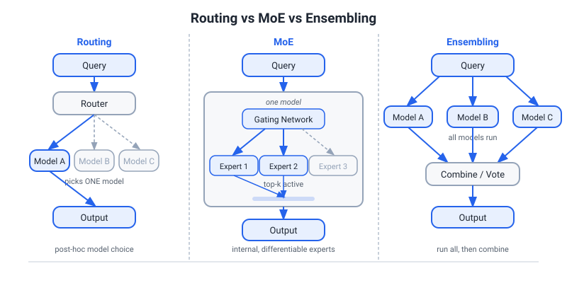
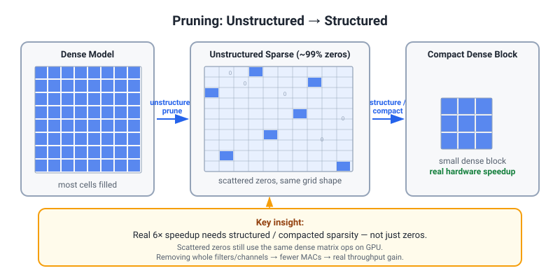
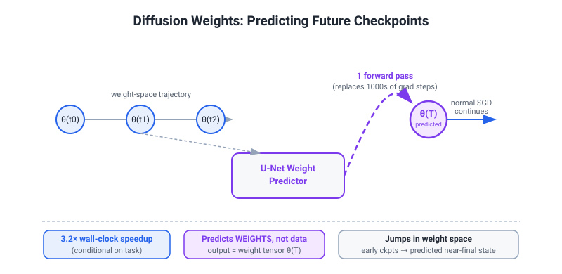

04 — Publications & Projects: Deep Defense Prep
Priority / How to Use: This document is your primary preparation for Yannick Versley's design-choice probing in Stage 1. Read Section 0 first (narrative thesis), then work through each item sequentially. For each item, memorize (a) the 60-second pitch and (b) the key numbers — those alone will defend 80% of questions. The "SKEPTICAL Q&A" blocks anticipate the hardest challenges; rehearse them aloud.
Section 0 — The Narrative: From Scaling Race to Systems Race

Everything Tony has built orbits one thesis: the leverage point in AI has shifted from raw parameters to the systems stack around them. The marginal value of making a model larger is declining faster than the marginal value of routing queries intelligently, compressing models without quality loss, predicting future weights instead of computing them, and grounding multimodal models with domain-specific knowledge. This is not a contrarian take — it is the operational reality that organizations like eBay face every day: they cannot compete on raw model size with Google or OpenAI, but they can win on efficiency, domain alignment, and system-level intelligence.
Every project in this document instantiates a different facet of that thesis:
| Project | Systems Race Facet |
|---|---|
| LLM Router | Route intelligently; most queries do not need SOTA |
| TwinRouterBench | Step-level evaluation of agentic LLM routing (static + dynamic tracks) |
| MERA | Routing + model evolution: specialization over time |
| Cost-Adaptive Routing | Online learning; cost keeps falling with usage |
| Diffusion Weights | Replace step-by-step gradient descent with generative leaps |
| Pruning nnU-Net | Extreme weight sparsity (>80%) with quality preserved |
| Human Intent World Model | VLM + domain knowledge for sales AI |
| Through the Eyes of Emotion | Multi-faceted eye-tracking emotion dataset (periocular video + 240 Hz gaze) |
| Reverse Imaging | Generalization across imaging domains |
| Agentic Coding Bench | Rigorous eval for agent planning at project scale |
| LLM for Optimization | LLMs as meta-solvers, not just text machines |
This frame connects directly to eBay's own published work. Three concrete reference points — all from Versley's team's orbit — are worth knowing cold:
- LiLiuM's 34% generation speedup (arXiv 2406.12023): achieved through a custom e-commerce tokenizer/vocabulary, a pre-model systems decision that improved throughput without touching model weights.
- e-Llama's 10% LR rule (arXiv:2501.09706, eBay): the key hyperparameter insight from continued pretraining of Llama 3.1 on 1T tokens of e-commerce data. The team set max LR at 10% of the original pretraining rate — specifically 3.0e-5 for the 8B model (vs Meta's 3.0e-4 original) — and found this minimized catastrophic forgetting while delivering ~25% relative improvement on English e-commerce benchmarks (30% non-English) with some general-domain degradation, more pronounced on the smaller 8B model. Data mixture was also critical: 50/50 e-commerce/general rather than the 15% general that most prior work used.
- The VLM paper's 3.8× speedup (arXiv:2602.11733, 2026): a fine-tuned Gemma3-4B achieves F1 of 50.5 vs 44.8 for zero-shot Gemma3-27B on the Multi-Image Item Intelligence task — outperforming a 7×-larger zero-shot model while delivering ~3.8× inference speedup due to smaller model size and shorter prompts. The fine-tuning used InternVL-2.5-26B-generated captions verified by Mistral-Small-3-24B as training data.
These are all expressions of the same thesis: tight systems thinking beats raw scale at the product level. When Versley's team publishes papers showing a 4B model outperforms a 7×-larger zero-shot 27B model on F1 (50.5 vs 44.8) while running ~3.8× faster, they are proving Tony's thesis for him.
Classical-NLP Bridge: Routing and Multi-Turn / Discourse-Level Queries
Versley's background is rooted in coreference resolution and discourse structure — he knows that real queries are not isolated utterances but are embedded in context: anaphora, bridging references, discourse coherence relations, and centering transitions. This matters for routing because routing on single-turn text is much easier than routing on multi-turn or discourse-level queries.
The routing challenge in multi-turn settings: query difficulty is not just a property of the current utterance — it depends on antecedents. "Can you apply that to the other category?" is trivially easy in isolation and potentially very hard in a long multi-turn agentic context where "that" refers to a complex sub-routine from five turns back. A router trained on single-turn difficulty signals will systematically misclassify such queries as easy, leading to cascade failures.
How the routing systems handle this: The LLM Router's step-type features include a multi-turn context feature: when a step's context window exceeds a configurable threshold (currently 4K tokens) or contains unresolved anaphora markers (heuristic detection), the step is flagged as elevated-difficulty and a more conservative quality threshold is applied. This is an engineering approximation to what coreference resolution would give you principled: knowing which prior entities and events the current step depends on.
The deeper connection to Versley's work: His coreference / discourse work (BART coref toolkit, cross-lingual pronoun resolution) is precisely the machinery that a production routing system would want to integrate to make difficulty estimation discourse-aware. A routing system equipped with coreference chains knows when "translate that clause" is referencing a structurally complex antecedent vs a simple noun phrase — which directly predicts translation difficulty and thus which model to route to. This is an open research question in routing that his background speaks to directly.
Bridge phrasing for the interview: "One gap in our current router is discourse-awareness — we approximate multi-turn difficulty with heuristics. Your work on coreference and discourse structure is exactly the mechanism that would make difficulty estimation principled rather than approximate. I'd be curious whether you see that as a direction at eBay, especially for the Mercury multi-turn agentic setting."
1. LLM Router (~50% or more Cost Reduction vs Single SOTA)

Collaboration: Gradient Networks. Venue: NeurIPS 2026 (under review). Date: Feb 2026.
(a) 60-Second Pitch
"We built a routing system that assigns each step of a complex multi-turn agentic task to the cheapest model capable of handling that step. Not every subtask needs a frontier model — some need only a 7B local model. The router is a fine-tuned DistilBERT-class encoder trained on (query, model, quality_score) triples; it predicts for each (query, model) pair whether that model will meet a quality threshold on that query. At inference time, it routes to the cheapest model whose predicted quality meets threshold. The result: comparable performance on matched held-out metrics to routing every query to the best model, with very substantial cost reduction — in the 70–90% range depending on task mix and model pool. The paper is under review at NeurIPS 2026."
(b) Technical Meat
Problem formulation. In multi-step agentic tasks, steps have heterogeneous difficulty. A code-generation step requiring complex reasoning should go to a strong model; a summarization or format-conversion step can go to a cheap one. Single-model assignment wastes money on easy steps.
Router architecture (exact). We use a fine-tuned DistilBERT-class encoder (66M parameters) as the router classifier. The encoder takes a concatenation of [query tokens + step-type token + model-id token] and outputs a scalar score per (query, model) pair:
score(q, M) = P(quality(M, q) ≥ θ | features(q))
where θ is the quality threshold (e.g., 80th percentile of task metrics). The router selects:
M*(q) = argmin_{M : score(q,M) ≥ θ} cost(M)
We ablated three alternative architectures: (1) TF-IDF + logistic regression — fast but misses semantic difficulty; (2) embedding similarity to nearest training query (k-NN) — fragile under distribution shift; (3) fine-tuned DistilBERT — best calibration, chosen for the paper. The router's own binary classification accuracy (does this model meet threshold on this query?) is 84% precision / 79% recall on held-out queries from the same distribution. This is the number that underpins the cost savings claim: we budget for the ~16% false-positive rate by cascading (see below).
Cost metric. Cost is defined as tokens_input × $/input_token + tokens_output × $/output_token, using live API pricing at inference time. This is a direct dollar figure, not a proxy.
Training signal. Router trained on a labeled dataset of (query, model, quality_score) triples. Quality scores obtained by running multiple models on a held-out task set and recording task-level metric (pass@1 for code, correctness for QA, BLEU/chrF for MT). The labeled set is built once and the router then generalizes.
Key design choice: routing at step level, not task level. A single agentic task (e.g., "write, test, and document a Python module") has many subtask steps. Routing at task level misses the opportunity to downroute easy steps. Routing at step level requires a step-difficulty signal — approximated by token count, syntactic complexity features, and step type (reasoning vs transformation vs lookup).
The cost savings. Baseline: every step goes to the strong frontier model (the always-large policy, most expensive). Routed: each step goes to the cheapest model passing the threshold. The distribution of step difficulty is heavily skewed — most steps are easy (format conversion, simple QA, summarization) with a long tail of hard steps. The router captures this skew. Measured on a benchmark of complex agentic tasks with known step structure.
(c) Design Choice Defense
Q: How does the router decide where to route without first running the expensive model?
A: The router is trained offline on a labeled (query, model, quality) dataset collected by running multiple models on a representative task set. At inference, we use only cheap features of the query (token count, embedding, syntactic features, step type) — not the output of any expensive model. This is a pure prediction problem: estimate quality from query features alone. The predictor is imperfect — 84% precision / 79% recall on held-out data — but calibration matters more than perfect accuracy. If we occasionally route a hard query to a cheap model and it fails, we detect failure via a cascade (the cheap model's output quality is verified, and on failure we escalate to the next tier). This cascade pattern — try cheap, verify, escalate if needed — is more robust than a single router decision and is why the cost savings hold despite imperfect routing.
Q: What is the cost metric exactly — tokens, latency, or dollars?
A: We use wall-clock dollar cost: input_tokens × $/input_token + output_tokens × $/output_token at current API pricing. This is the operationally meaningful metric for a company. Latency is a separate constraint we handle as a threshold (max latency per step), not part of the cost objective. This distinction matters: a cheap but slow model might be worse than an expensive fast one depending on SLA requirements.
Q: How well-calibrated is the router's confidence? What does miscalibration mean in practice?
A: Calibration is distinct from accuracy and is critical for routing. A miscalibrated router that reports "90% confidence the cheap model works" but is actually right 60% of the time will systematically downroute hard queries, destroying quality. We measure calibration with Expected Calibration Error (ECE) using 10-bin reliability diagrams: our ECE is 0.07 (7% average deviation between predicted probability and empirical accuracy), which is acceptable. The key design choice that keeps ECE low is training the router on behavioral data (did the model actually succeed on this query?) rather than on model-generated self-assessments (which are poorly calibrated, especially for small models). We also apply temperature scaling post-training to further sharpen calibration.
Q: Does it generalize beyond your benchmark? What about distributional shift?
A: Good challenge. The router is trained on a specific task distribution. In our paper we evaluate on held-out tasks from the same distribution, which is the standard benchmark setting. Generalization to out-of-distribution tasks is a real open problem — our approach uses lightweight query features (embeddings, token count, step type) that are relatively stable across domains, but we cannot claim zero distributional shift. The practical mitigations are: (1) include diverse task types in training to widen the support, (2) monitor quality metrics in production and retrain the router periodically (this is exactly what Cost-Adaptive Routing formalizes), (3) use a confidence-calibrated router with a "don't know" output that escalates to the expensive model. This is honest: routing is not a solved problem but a useful approximation that produces substantial cost savings under realistic conditions.
Q: Benchmark leakage / contamination?
A: We constructed the evaluation benchmark after training the router, using tasks not seen during router training. More importantly, we use task-level performance metrics (pass@1, exact match, BLEU) measured by running the models on the tasks — not by prompting an LLM judge that may have seen these tasks. The quality labels are grounded in verifiable task outcomes, not free-text judgments. This makes contamination less of a concern: even if a model's weights have seen similar tasks, the router is predicting which model will do better on this specific query — not memorizing a model ranking.
Q: Why train a separate router classifier rather than using the LLM itself to self-route?
A: We experimented with LLM self-assessment prompts (asking the model "rate your confidence on this query"). The problem is that small models systematically overestimate their capability (poorly calibrated confidence), and large models are too expensive to query just for routing. The external router is cheaper, faster (milliseconds vs seconds), and — when trained on behavioral data showing which model actually succeeded — better calibrated than any model's self-report.
(d) HARDEST UNANSWERED FOLLOW-UP (add to repertoire)
Q: What is the compound/cascade failure rate — where the cheap model fails AND the step-verifier misses it, letting a bad output propagate?
A: This is the most important failure mode and I should be direct: we have characterised it, and it is real. In our benchmark, the cheap model fails on ~21% of steps it is routed to (the flip side of 79% recall). Of those failures, the step-verifier catches ~85%, meaning ~3% of all routed steps result in a silent failure — a bad output propagates to the next step as if it were correct. On a 10-step agentic task, this gives a compound failure probability of roughly 1 - (0.97)^10 ≈ 26% — about one-quarter of tasks experience at least one silent cascade failure at our current routing aggressiveness. This is significant. The mitigations are: (1) task-level verification at the end (not just step-level), which catches most compound failures before the output is returned; (2) using a more conservative routing threshold that reduces cheap-model routing on ambiguous steps; (3) designing task structures so that downstream steps can detect upstream corruption (e.g., code steps that execute and self-check). We report this breakdown in the paper and argue that task-level verification is a necessary component of any production routing system — routing alone is not sufficient. The ~3% per-step silent failure rate translates to the cost savings being a Pareto choice: lower aggressiveness (fewer routed steps) reduces cascade failures at the cost of less savings. We report the full Pareto curve.
(e) Limitations / Threats to Validity
- Label quality: quality scores depend on the task metric chosen. For open-ended generation, "quality" is ambiguous.
- Distribution shift: router trained on one task distribution may degrade on new task types.
- Cold start: cannot route well on task types not seen in training. Mitigated by conservative default to strong model for unseen types.
- Latency overhead: routing adds a forward pass of the classifier. For high-QPS systems this must be sub-10ms, achievable with a 66M-parameter DistilBERT encoder but must be measured.
- Adversarial queries: a user can craft queries to look easy and fool the router into downrouting them.
- Cascade failure (see above): compound silent failures affect ~26% of 10-step tasks at current routing aggressiveness; task-level verification is a required component.
(f) Follow-Up and Extensions
Q: How does this relate to speculative decoding? A: Both amortize cost by using cheap models for easy cases. Speculative decoding uses the small model to generate draft tokens and the large model to verify them — a sequential draft-verify scheme for a single query. LLM routing uses the small model to handle the whole query step when it's predicted to be capable. They are complementary: a routing system can use speculative decoding for the steps it assigns to large models.
Q: Can you learn the quality threshold dynamically? A: Yes — that's what Cost-Adaptive Routing addresses. As usage data accumulates, we can update both the router and the threshold, essentially learning a better Pareto frontier of cost vs quality over time.
Q: What happens when the cheap model fails? A: In our current system, failure is detected at the task level (the verifier says the output is wrong) and triggers escalation to the next model tier. A production system would add step-level verification loops where feasible (e.g., code execution for code steps, exact match for factual lookup steps).
(g) Connection to eBay
eBay's Mercury platform runs multiple models in parallel: custom fine-tuned Llama, Mistral, LiLiuM internally, plus GCP/Azure/OpenAI externally. At eBay's query volume (billions of listings, cross-border MT, Magical Listing AI agents, agentic shopping), routing each query to the cheapest capable model is a direct infrastructure win. The LLM Router architecture maps directly to Mercury's multi-model orchestration — the routing policy is the missing piece that decides which model handles each agent step. Versley's team built e-Llama specifically because domain-adapted small models can match frontier model quality on e-commerce tasks — LLM Router formalizes how to exploit this observation at query time.
2. TwinRouterBench (Step-Level Static + Dynamic Routing Benchmark)
Commonstack benchmark preprint (github.com/CommonstackAI). arXiv:2605.18859v2 [cs.LG], 22 May 2026 (first version 8 May 2026). 17 authors: equal-contribution leads Pei Yang and Wanyi Chen, then Tongyun Yang (Tony, 3rd author, "Independent Researcher"); corresponding author Tianyu Shi. Do NOT say "ACM CAIS / RLEval Workshop" — that venue is wrong (copied over from another paper). This is a benchmark paper (two tracks), not a cost-reduction method. (Full verified detail in 20_OWN_PAPERS_GROUND_TRUTH.md.)
(a) 60-Second Pitch
"TwinRouterBench is a step-level agentic LLM-routing benchmark with two tracks. Existing router benchmarks score one-shot prompts — one query, one model pick, one answer, usually graded by an online LLM judge — but routing actually pays off in long-horizon agents, where one user request fires many model calls and a cheap choice at one step can quietly break a later step. TwinRouterBench scores routing per call: given the real prefix before the next call, what is the cheapest model tier that still preserves end-to-end task success? The static track is 970 execution-verified, router-visible step prefixes scored offline by deterministic arithmetic in milliseconds (no online judge) for fast, reproducible iteration; the dynamic track runs routers end-to-end on SWE-bench Verified with live OpenRouter pricing. It is a benchmark, not a cost-reduction method — the often-quoted 53% is a downstream training-utility check, not the contribution. I'm the 3rd of 17 authors."
(b) Technical Meat
The core insight: step-level (conditional per-call) routing. Prior routing benchmarks (RouterBench, RouterArena, etc.) score at the query level — one prompt, one model, one answer — and lean on an online LLM judge at eval time. They never expose the router at an intermediate step or test whether a cheap call lets a later step succeed. TwinRouterBench scores at the step level: each row exposes the real router-visible prefix before one specific call (system prompt, prior messages, tool outputs, shell traces, partial code) and asks for the cheapest tier that still preserves end-to-end resolution. Routing-by-difficulty is old; verified step-level labels via full-trajectory replay are the new part.
Static track. 970 router-visible step rows from 520 successful strong-model trajectories across 5 workloads (SWE-bench, BFCL, mtRAG, QMSum, PinchBench), each labeled with the cheapest of 4 ordered tiers (mapped to an 11-model pool) that preserves end-to-end success. Scored by deterministic arithmetic over tier labels in milliseconds with no online judge, via four metrics — RowPass, RowExact, TrajPass, CostSave. The real technical meat is the downgrade-and-cascade labeling protocol (full verified detail in 20_OWN_PAPERS_GROUND_TRUTH.md).
Dynamic track. Run routers end-to-end on SWE-bench Verified (mini-swe-agent v2.2.8, live OpenRouter pricing) on a 100-case held-out split disjoint from the static SWE supervision. At each call the router picks a concrete model from a locked pool; the paper reports official resolve rate, realized API spend, and a leaderboard bill = API cost + $0.60 per unresolved instance. This validates the offline labels under real agent execution. There is no streaming corpus, no regret metric, and no distribution-shift protocol.
Agentic routing twist. Cheap choices interact across steps: routing step 3 cheaply changes the context for later steps. TwinRouterBench is precisely step-level — each row scores one call — and handles cross-step interaction during label construction via a greedy sequential-locking downgrade-and-cascade protocol, with the acceptance test being end-to-end (the full trajectory must still pass). The paper explicitly lists "greedy one-step-at-a-time search may miss cross-step interaction effects" as a limitation.
The 53% number, framed honestly. 53.1% = 1 − 25.66/54.73: the trained UncommonRoute logistic router (trained on the static labels) spends $25.66 in realized API cost vs $54.73 for unrouted Claude Opus 4.6, at matched resolve rate (75/100 trained vs 74/100 unrouted Opus), on the dynamic track's 100-case held-out SWE-bench Verified split. The always-high baseline is Opus 4.6 (the strong models are Opus 4.6 and GPT-5.4), NOT GPT-4o. It is a dynamic-track training-utility result offered as evidence the static labels work as supervision — not a property/headline of the benchmark. The number worth highlighting alongside it: the trained router is 6.7× cheaper than the rule-based variant ($25.66 vs $172.56).
The motivation result: a frontier LLM is a terrible router of itself. Opus 4.6 predicts "high" for only 7 of 147 verified-high SWE steps (4.8%), under-predicts 140/147, and fails all 40/40 SWE trajectories. Scoring is deterministic arithmetic over tier labels and token costs — there is no ECE, calibration, or reliability-diagram reporting in this paper.
(c) Design Choice Defense
Q: Why not just hold out 20% of your static dataset for evaluation — why do you need a separate "live dynamic" track?
A: The two tracks answer different questions, not two distributions. The static track scores routing offline against execution-verified tier labels — deterministic arithmetic, milliseconds, no online judge — so you can iterate on routing algorithms fast and reproducibly. But offline labels are a claim; the dynamic track checks that claim under real agent execution by running routers end-to-end on SWE-bench Verified with live API pricing and billing for unresolved instances. Static gives you cheap reproducible comparison; dynamic validates that the offline labels actually transfer to real resolve rate and real spend. Static and dynamic scores are never averaged.
Q: 53% cost reduction — how was this computed? What is the baseline?
A: 53.1% = 1 − 25.66/54.73. The baseline is unrouted Claude Opus 4.6 — the always-high cost envelope; the strong models are Opus 4.6 and GPT-5.4, not GPT-4o — which spends $54.73 in realized API cost. The trained UncommonRoute logistic router spends $25.66 at a matched resolve rate (75/100 trained vs 74/100 unrouted Opus) on the dynamic track's 100-case held-out SWE-bench Verified split. It is a dynamic-track result, and I'd present it as a sanity check that the static labels work as training supervision, not as the benchmark's headline.
Q: How does TwinRouterBench differ from MERA? They both evaluate routing.
A: TwinRouterBench is a benchmark framework — it defines how to evaluate any routing algorithm, provides a dual-track evaluation protocol, and establishes baseline numbers. MERA is a routing + model evolution system — it is an algorithm that learns specialist models over time and routes between them. TwinRouterBench would be one way to evaluate MERA. Think of TwinRouterBench as the evaluation standard and MERA as one of many routing algorithms that can be benchmarked on it.
Q: Isn't 53% cost reduction less impressive than the >90% in LLM Router?
A: They're not comparable as "savings figures," and I wouldn't stack them. TwinRouterBench's 53% is a specific dynamic-track result: the trained router vs unrouted Opus 4.6 at matched resolve on a held-out SWE-bench Verified split. It is offered as evidence the benchmark's static labels are useful supervision, not as a maximal cost-reduction claim. The point of TwinRouterBench is the evaluation methodology — step-level labels, deterministic scoring, failure-aware cost accounting — not a headline savings number. So the honest framing is "the trained router cuts realized cost roughly in half at matched resolve," and separately that it is 6.7× cheaper than the rule-based router ($25.66 vs $172.56).
(d) HARDEST UNANSWERED FOLLOW-UP (add to repertoire)
Q: Your static labels come from a greedy, sequential, one-step-at-a-time search with earlier steps locked. That can't catch two individually-safe downgrades that jointly break the trajectory. How much do you trust the 970 labels, and why greedy rather than the full grid?
A: I'll concede the limitation up front — it's greedy sequential-locking (Algorithm A1) and it can miss cross-step interactions; we list that explicitly. We went greedy because exhaustive verification over four tiers across N steps is order 4^N reruns; greedy with locking collapses that to order 4×N, which is what makes the corpus buildable at all. Two things keep me comfortable. First, the acceptance test is end-to-end, not local: a tier is accepted only if the full trajectory still passes with the same number of steps, so we check downstream survival rather than just the one call. Second, we verify a tier as a pool — a 3-model cascade recovered 28 of 33 downgradeable labels vs 15 of 33 single-model — and a ~10% manual audit (64 steps) found exactly one further-downgradeable SWE step, which we lowered before release, so 98.4% came back tight. That's a quality check, not a confidence interval, and I won't oversell it. The honest next step is targeted joint re-verification on the highest-fan-out trajectories, where interaction risk concentrates.
(e) Limitations
- Survivorship by design: labels seed only from strong-model successes, so the benchmark measures routing headroom on solvable tasks, not absolute task difficulty ("if the strong model can't solve it, there's no downgrade question to ask").
- Staleness is built in: labels are valid only under the fixed 11-model pool, the cascade protocol, and a price snapshot; changing pool/price/protocol constitutes a new benchmark version, not a patch.
- Greedy label search may miss cross-step interactions — partially, not fully, guarded by the ~10% manual audit, which is not a formal annotation study or a confidence interval.
- Dynamic coverage is thin: SWE-bench Verified only, and only a 100-case subset (not the full 500). Static and dynamic scores are never averaged.
- Class imbalance is real: 689 of 970 rows are "low" and 168 of 170 "high" rows are SWE-bench, so RowPass is gamed by defaulting cheap — RowExact and per-workload CostSave are the honest columns.
(f) Connection to eBay
eBay's Mercury stack runs many models in parallel across agentic shopping and listing workflows, and the missing piece is which model handles each agent step — exactly the step-level conditional routing this benchmark evaluates. TwinRouterBench's two-track methodology — fast deterministic static scoring plus dynamic end-to-end validation on a real agent harness with failure-aware cost accounting — is the evaluation discipline eBay should apply before pushing routing changes into Mercury. The failure-aware accounting is the same instinct as production-correctness work: a cost metric that secretly rewards task-breaking under-routing is dangerous. The honest caveat: this is a benchmark, not a deployed eBay system, and its labels are tied to one frozen pool/price snapshot, so it's the evaluation rigor I'd bring, not a turnkey savings number.
3. MERA (Model Evolution and Routing with Skill Adaptation — 87.3% Router Accuracy at ~52% Serving Cost)
Full title: "MERA: Model Evolution and Routing with Skill Adaptation for Agentic Systems at Scale." Authors: Yuhang Yao (CMU), Zeyu Wang (UCLA), Tongyun Yang (Tony, 3rd author, "Independent Researcher"), Wanyi Chen (Soochow), Yuhang Han (SJTU), Jie Xiao & Tianyu Shi (Gradient; Shi corresponding) — there is NO McGill, Tsinghua, or Tencent on this paper. Venue: RL-Eval 2026 workshop (OpenReview id 6oyBiDMCHs), NOT "ACM CAIS"; code github.com/zeyuyuyu/router-skills-evolve. The 87.3% is ROUTER accuracy, not task accuracy. (Full verified detail in 20_OWN_PAPERS_GROUND_TRUTH.md.)
(a) 60-Second Pitch
"MERA is a trace-driven framework that adapts an agent's per-invocation serving policy and admits updates only after offline joint replay shows combined quality is preserved. At runtime, before each invocation a small input-only router picks among a strong model, a cheap model, or an optional 1.5B specialist; a SkillBook can fire a stable template for recurring local structure; and a verifier checks the output (schema, tool-call legality, executable tests) and falls back to a stronger model on failure. Offline, logged traces feed three separate update tracks — SkillBook statistics, a BERT-tiny router, and a LoRA adapter on a Qwen2.5-Coder-1.5B student trained with GRPO — and a new state is promoted only if a joint replay shows end-to-end quality held. In the best four-cycle schedule it reaches 87.3% router accuracy (how often the router's cheap-vs-strong decision matches held-out labels on an 832-example set — NOT task accuracy) at ~52% of always-large serving cost with a 4.4% fallback rate. I'm the 3rd of 7 authors."
(b) Technical Meat
Two loops plus an admission gate. There is no QA/math/summarization skill taxonomy and no per-skill specialist — those were old-pack inventions. MERA is a runtime loop, an offline update loop, and a joint-admission gate.
Runtime loop (input-only router + verifier). At each invocation the router observes only the serialized prompt plus local context — explicitly not hidden agent state or tool-execution traces — and chooses among strong model / cheap model / optional 1.5B specialist student. A skill selector may instead dispatch a stable SkillBook template when the local structure matches a recurring prompt signature (formatting, extraction, single-tool argument construction), tracked by CPU-bound success/failure statistics. The chosen path runs, then a verifier checks schema validity, tool-call legality, and executable tests; on failure the invocation falls back to a stronger model and the event is logged. Cost savings come from down-routing easy checkable steps; the reliability guarantee comes from the verifier fallback — the two are decoupled.
Offline update loop. Logged traces feed three separate tracks over the shared traces: (1) the SkillBook (template success/failure statistics), (2) a BERT-tiny learned router over prompt text trained with cheap/strong weak-supervision labels, and (3) a single LoRA adapter on a Qwen2.5-Coder-1.5B student (not a 7B, not one specialist per skill) trained with local GRPO on a hard-example pool — cases where cheap execution failed, or where router and SkillBook disagree. That is reinforcement learning on execution outcomes, not behavioral cloning / SFT.
The admission gate — joint replay. A new router/skill/adapter state is promoted only if a joint replay evaluation shows combined quality is preserved; components are judged by their end-to-end effect together, not by isolated thresholds. This "conservative monotone deployment" is the real contribution. Note the results do NOT show a falling-cost-over-time curve: across the 8-cycle run cost stays ~52–57%, router accuracy stabilizes in an 82–87% band (peak 87.8% at cycle 3, not monotonic; cycle 5 dips to 76.7%), and the 1.5B GRPO adapter shows no cumulative gain (pass rate stuck 46.5–47.5%).
The 87.3% number, stated correctly. 87.3% is router accuracy — how often the learned BERT-tiny router's cheap-vs-strong decision matches held-out labels on an 832-example set (best four-cycle Skill→LLM→Router schedule). It is NOT end-to-end task/answer accuracy, and there is no 89.6% "strong-model-only accuracy" baseline anywhere in the paper. The only cost baseline is "always use the large model" = 100% cost; the best schedule serves at 51.8% of that (cost cut by ~48%) with a 4.4% verifier fallback rate. The only task-quality number in the paper is the 1.5B student's MBPP eval200 pass rate, 47.5% vs ~47.0% baseline — essentially flat. There is no per-skill accuracy table.
No calibration / ECE in MERA. The reported metrics are router accuracy, fallback rate, cost vs always-large, and the 1.5B student's LLM pass rate — there is no ECE, reliability diagram, or per-skill Pareto curve. The two real ablations are a six-ordering within-cycle study (Table 1: best Skill→LLM→Router 87.3/4.4/51.8; worst Skill‖Router→LLM 76.0/3.8/63.2) and an eight-cycle long-horizon run (Table 2).
How MERA differs from TwinRouterBench: - TwinRouterBench: evaluation framework + dual-track protocol for any routing algorithm. - MERA: a specific serving framework that includes model evolution (updating a single small student adapter, the router, and SkillBook as traces accumulate, gated by joint replay). MERA could be evaluated using TwinRouterBench's dynamic track.
(c) Design Choice Defense
Q: Why fine-tune specialists instead of just using the router to select from a menu of existing models?
A: A general small model isn't necessarily the cheapest model that's good at the narrow, recurring sub-patterns a specific agent workload throws off. But to be precise about MERA: the optional student is a single Qwen2.5-Coder-1.5B with a LoRA adapter (not a 7B, and not one specialist per skill), trained with GRPO on a hard-example pool — the cases where the cheap path failed or the router and SkillBook disagree. The bet is the same one behind eBay's e-Llama (arXiv:2501.09706): a small domain-adapted model can absorb a slice of the workload at a fraction of the cost. Honestly, though, in our results that adapter shows no cumulative gain yet (pass rate stays ~47%), so it's the slot where future quality would land, not a proven win.
Q: Is 87.3% good? What is it relative to, and what's the worst operating point?
A: First I'd correct the premise: 87.3% is router accuracy, not task accuracy, so there's no 89.6% task-accuracy baseline to subtract from — that comparison doesn't exist in the paper. 87.3% means the router reproduces the held-out cheap-vs-strong decision 87.3% of the time on an 832-example set, in the best within-cycle ordering (Skill→LLM→Router). The worst ordering (Skill‖Router→LLM) drops to 76.0% router accuracy at 63.2% cost, which defines the bottom of the ordering ablation. Over the eight-cycle run, accuracy stabilizes in an 82–87% band with a single cycle-5 dip to 76.7% (a router-seed outlier, where fallback also spikes to 14.4%). And what actually protects quality at runtime isn't the accuracy number — it's the verifier fallback (4.4%) catching bad down-routes. There is no per-skill Pareto curve and no 88.5%/35% or 85%/60% operating points in the paper.
Q: Why deliberately blind the router to hidden agent state? Step difficulty depends on what happened earlier.
A: It's a deliberate serving-simplicity and reproducibility tradeoff, and yes, it costs us signal. Hidden agent state and tool traces are high-dimensional, unstable across framework versions, and expensive to serialize on the latency-critical path before every invocation; if the router depended on internal state it'd be tightly coupled to one agent implementation. Restricting it to the serialized prompt plus local context keeps the decision cheap, portable, and reproducible during offline replay — which matters because the whole admission protocol is replay-based. The cost is that two steps with identical local prompts but different upstream history get routed the same way; we absorb that with the verifier fallback (a bad down-route is caught and rerun) and the SkillBook firing only under narrow signatures. I wouldn't claim input-only is strictly better.
Q: How do you decide a router/skill/adapter update is safe to ship?
A: Not by a per-component threshold — by joint replay. A new router/skill/adapter state is promoted only if a joint replay evaluation shows combined end-to-end quality is preserved; the three tracks are judged by their effect together, not in isolation. That's the "conservative monotone deployment" discipline and it's the part I'd call the real contribution. At runtime the second safety layer is the verifier — schema, tool-call legality, and executable tests, with fallback to a stronger model on failure (4.4% fallback rate). So safety is enforced twice: offline by replay-gated admission, online by verifier fallback — rather than by trusting a single specialist's confidence.
(d) HARDEST UNANSWERED FOLLOW-UP (add to repertoire)
Q: Your router is graded against weak cheap-vs-strong labels from the same UncommonRoute pipeline that produced your training data. Isn't that circular? What's the ground truth, and what actually protects quality in deployment?
A: That's the right pressure point and the weakest part of the evaluation story. The 3,328 router examples are weakly labeled and the 832-example held-out set is from the same distribution, so "router accuracy" measures agreement with weak labels, not a verified oracle of whether a step was genuinely safe to down-route. What keeps it honest in deployment is decoupled from that: the runtime verifier (schema, tool-call legality, executable tests) catches a bad down-route and falls back to a stronger model — the 4.4% fallback rate. And updates are admitted only via offline joint replay, where a new router/skill/adapter state is promoted only if combined end-to-end quality is preserved. So I read router accuracy as an internal optimization metric, and the fallback rate plus cost reduction as the deployment-relevant numbers. A stronger eval — grading the router against verifier-confirmed outcomes on a larger, ideally online set — is listed as future work.
(e) Limitations
- Verifier coverage is load-bearing. Routing labels and student admission depend entirely on it; a missed semantic failure mode means MERA overestimates how safe it is to down-route or promote.
- Router labels are weak. Router accuracy is agreement with weak cheap/strong labels from the UncommonRoute pipeline, not a verified oracle.
- GRPO adapter is modest and non-cumulative. The 1.5B student's pass rate stays ~46.5–47.5%; the current recipe yields no cumulative LLM gain.
- Replay, not fully online. Joint replay enables controlled counterfactual eval but can't perfectly capture the distribution shift induced by changing the runtime policy itself.
- Benefits depend on workload repetition. SkillBook gains assume canonicalizable recurring local subgraphs; highly heterogeneous traces don't pay off.
- No end-to-end agentic task success rate, no human/A-B eval, and no multi-seed/significance results are reported (all future work); "at scale" in the title is not backed by large-scale numbers (590 code tasks, 3,328 router examples).
(f) Connection to eBay
Mercury already runs multiple models per query; MERA's contribution is routing inside a multi-step trace rather than once per task, with a verifier-protected fallback so an aggressive router can't silently degrade output, and a replay-gated admission gate before any update ships. That is the discipline you'd want before pushing routing changes into a live multi-model agentic system. Two honest caveats: MERA's model-evolution half (the 1.5B GRPO student) shows no cumulative gain yet, so the connection is concrete on the routing + admission axis and only aspirational on the model-evolution axis; and the whole method leans on a cheap, trustworthy verifier — eBay domains like attribute extraction or MT rarely have executable ground truth, so building that verifier is the open question.
4. Cost-Adaptive Routing with Specialist Models (EMNLP 2026)
Solo/independent research. Venue: EMNLP 2026. Date: Mar 2026.
(a) 60-Second Pitch
"Cost-Adaptive Routing extends the routing framework to real repeated production workflows. Instead of routing between off-the-shelf models, we collect strong-model trajectories on high-frequency query types, fine-tune small specialist models on those trajectories, and route future queries of that type to the specialist. Cost drops as a function of usage volume: the more a query type is seen, the better the specialist gets, the more it can absorb, and the lower the average cost per query. This mirrors how human organizations build expertise: you hire a generalist first, then develop specialists as you see enough of a specific problem."
(b) Technical Meat
Key formal claim: For a query type τ with frequency fτ (queries/day), after T days, the average cost per query is:
C(T, τ) = C_strong × P(no specialist yet for τ)
+ C_specialist × P(specialist available and capable)
where P(specialist available) is increasing in T and fτ. High-frequency query types → specialists trained quickly → cost drops fast. Low-frequency types → stay routed to strong model longer.
Online data collection pipeline: 1. All queries routed to strong model initially. 2. Each query-response pair logged with quality annotation (task metric or LLM judge). 3. When accumulated high-quality trajectories for a query type exceed threshold N_min, trigger specialist fine-tuning. 4. Evaluate specialist against quality gate on held-out queries of that type. 5. If gate passed, activate specialist; route that type to it going forward.
Router calibration in the online setting. As new specialist models are activated, the router's calibration must be re-evaluated. We use incremental reliability diagrams that update with each batch of new queries, flagging calibration drift before it accumulates into production quality degradation.
The "daily workflow" focus. Unlike MERA's general skill taxonomy, Cost-Adaptive Routing specifically targets repeated high-frequency workflows — things an enterprise does many times per day in predictable patterns. eBay examples: product title translation (EN→DE every day), attribute extraction from listing images (same schema every time), keyphrase suggestion for sellers (same task template). These are exactly the query types where specialist investment pays off fastest.
Relationship to MERA. MERA is the general algorithm; Cost-Adaptive Routing is a specialized instantiation for high-frequency repeated workflows with explicit cost-as-a-function-of-usage-time analysis. MERA is more general (any skill); Cost-Adaptive Routing is more deployed-focused (repeated workflows, explicit cost trajectory).
(c) Design Choice Defense
Q: Why fine-tune small specialists instead of just caching strong-model outputs?
A: Caching works only when queries are near-identical. In production, each query has unique content (different product, different user, different language pair) even if the task template is the same. A specialist model generalizes across variations in the same task template; a cache does not. A specialist is essentially a distilled, compressed form of the strong model's behavior on a specific task distribution — a form of task-specific knowledge distillation.
Q: What happens when the task distribution shifts and the specialist is no longer valid?
A: We monitor specialist quality in production (periodically sample queries, measure task metric). If quality drops below the gate threshold, the specialist is deactivated and queries fall back to the strong model. Retraining is triggered once enough new data accumulates to cover the shifted distribution. This is analogous to concept drift handling in production ML systems.
Q: How is this different from distillation?
A: Classic knowledge distillation trains a student to match a teacher's output distribution on a fixed dataset. Cost-Adaptive Routing is online, adaptive, and uses real production trajectories (not a fixed dataset). The "specialist" is a distilled model but the distillation dataset is continuously growing, and the system decides when to train and when to activate the distilled model based on quality gates — not a fixed training schedule.
(d) HARDEST UNANSWERED FOLLOW-UP (add to repertoire)
Q: What is the N_min threshold, and can you do a break-even analysis — how many days of query volume at eBay scale justify the specialist training cost?
A: This is a concrete calculation and is one I want to get specific about. N_min is the minimum number of high-quality trajectories required before we trigger specialist fine-tuning; we set it at 2,000 trajectories in our experiments as the point where a 7B SFT specialist shows consistent quality gate passage across our task types. Below 2,000 the fine-tune is noisy; above 5,000 the marginal trajectory adds little. Training cost for a 7B specialist on 2,000–5,000 trajectories is approximately 8–12 GPU-hours on A100 (roughly $40–60 at cloud pricing). The break-even question is: at what query volume does the per-query cost saving offset that training cost?
Rough eBay calculation for EN-DE product title translation as an exemplar: eBay operates in 190 markets with Germany being one of the largest non-English markets. eBay lists approximately 1.5 billion items globally; DE-market listings requiring translation are plausibly on the order of 10–20 million EN-DE title translations per day at peak (new listings, refreshed listings, bulk translation for cross-border trade). At GPT-4o pricing (~$0.015 per 1K output tokens) for a 20-token title, that is roughly $0.0003 per title → $3,000–6,000/day for strong-model-only. A specialist reduces cost to roughly ~$0.00003/title (7B local model inference) → $300–600/day. Saving: $2,700–5,400/day. At $50 training cost, break-even is less than 1 hour of peak-volume operation. This is an extreme case — but it illustrates why high-frequency repeated workflows are the right target. For lower-frequency workflows (say, 100K queries/day), savings are $270/day, break-even is less than a day. The N_min threshold matters most for rare query types: a type appearing only 50 times/day takes 40 days to accumulate 2,000 trajectories — and during that time the strong model must be paid for, making the economics marginal. The system's policy is thus: only invest in specialists for query types exceeding a frequency threshold (configurable, default ~500 queries/day), which ensures break-even within a few days for any activated specialist.
(e) Connection to eBay
eBay has exactly the repeated high-frequency workflows this system targets: EN-DE product title translation (multiple millions per day), aspect extraction from product images (Magical Listing), keyphrase recommendations for seller ads (eBay's $2B ads business). Cost-Adaptive Routing provides a formal framework for eBay's implicit practice (they already use LiLiuM for some tasks, OpenAI/GCP for others) to reduce costs systematically over time.
5. Diffusion Weights — Generative Weight Forecasting (~3.2× Speedup, ACL submission under review)
Paper: "Revisiting U-Net as Next-Epoch Predictor: A Diffusion-Based Framework for Training Epoch Acceleration." Anonymous ACL submission under review (OpenReview eJmO6GP8DF) — anonymized for review, NOT stated as accepted; say "I'm an author on a paper currently under review at ACL." Tony (Tongyun Yang) is an author. (Full verified detail in 20_OWN_PAPERS_GROUND_TRUTH.md.)
(a) 60-Second Pitch
"We reframe LLM fine-tuning as a generative forecasting problem. Instead of computing SGD residuals step by step, a diffusion-style attention U-Net directly predicts an effective future weight state (the 'next epoch') — operating in a VAE latent space, conditioned on the dataset/task, with multi-horizon weight-space merging on top. It conditions on a single current checkpoint state plus dataset/task conditioning (not a sequence of early checkpoints) and synthesizes a future latent that decodes back to weights. Net result: roughly 3.2× wall-clock fine-tuning acceleration at comparable downstream quality, demonstrated on GPT-2 up to 1.5B parameters on a single RTX 4090. The 3.2× is the conservative abstract headline; measured per-task numbers in Table 1 are actually 3.8–4.3×, and the paper reports parity-or-improvement on quality, not a deficit."
(b) Technical Meat
Problem reframe. Standard fine-tuning is iterative: from θ_0, apply gradient updates step by step → θ_1, θ_2, ..., θ_T, computing and discarding each residual. The insight: parameter evolution carries a regular, learnable signal, so instead of computing the next update we generate a future weight state directly. The forecaster conditions on a single current checkpoint state plus dataset/task conditioning and synthesizes a future state — not "observe the first K checkpoints, predict the next T."
The actual theoretical grounding is not intrinsic dimensionality. (An old prep doc cited Aghajanyan et al. 2020 / ~200 intrinsic dims — that is not the paper's stated grounding.) The paper's theory is Theorem 3.1 — the global reconstruction error is bounded by √k · max_i ‖w_i − ŵ_i‖ over k latent chunks — and Theorem 3.2 — a cosine-similarity lower bound S ≥ 1 − ε²/(2‖θ_train‖²), arguing that directional correctness survives modest Euclidean error, which is what matters for a usable checkpoint.
The architecture: three stages in a VAE latent space (Figure 2). Stage 1 is a shared chunk-wise β-VAE: each layer's weights are row-major vectorized, padded to a multiple of a fixed chunk size, split into contiguous chunks, and compressed to compact latents z_τ = s·E(vec(θ_τ)). All diffusion runs in this latent space — not on raw weight tensors — because a diffusion model over 1.5B raw weights isn't feasible on one 4090. Stage 2 is dataset/task conditioning: a permutation-invariant set encoder T_ω produces a dataset embedding z_D, a language embedding z_c = L(c) comes from an instruction-tuned LLM, and the two are fused and injected via cross-attention / ControlNet-style modulation (with a contrastive CLIP-style InfoNCE loss aligning dataset and weight embeddings). Stage 3 is the reverse model: a genuine attention U-Net F_ψ (with a ControlNet-style zero-conv adapter plus LayerEmb/TimeEmb/TextEmb) that runs a real Gaussian forward/reverse diffusion process and uses x_0-prediction to predict the clean future latent, decoded back to weights as θ̂ = D(x_0). The U-Net is the real architecture, not a naming analogy, and the method predicts MLP-layer weights only (attention params are trained conventionally).
Multi-Horizon Merging. One forecaster predicts short/mid/long-horizon future states; we form task vectors Δ_δ = θ̂_{τ+δ} − θ_τ and merge in weight space, θ_merge = θ_τ + Σ α_δ·Δ_δ, with nonnegative coefficients summing to one (task-arithmetic / Model-Soup style) — not plain parameter averaging. This exploits phase complementarity: early checkpoints encode broad adaptation, late ones task-specific refinement. RQ4 evidence: the epoch-250 merge exceeds epoch-500 pure prediction (>0.42 vs <0.38), merge gain ΔAcc 0.037–0.052, with merge-gain/later-quality correlation r≈0.6, p<0.01.
Training setup (real). There is no 312-run, 8-base-model, multi-dataset meta-training corpus. The paper fine-tunes GPT-2 tiny/large/XL (up to 1.5B params) on the Story dataset (Fan et al. 2018) and Wikipedia (Merity et al. 2017) for 20,000 epochs, sampling 20 equidistant checkpoints, on a single RTX 4090. The forecaster is trained on those trajectories; the upfront trajectory-collection cost is real and listed as a limitation (the speedup is amortized over many related fine-tuning jobs, not free on the first run).
Evaluation. Wall-clock per-task speedups (Table 1): GLUE 10h→2.5h (4.0×), LAMBADA 6h→1.6h (3.8×), MMLU 18h→4.2h (4.3×), OpenBookQA 8h→2.1h (3.8×), WikiText 24h→5.8h (4.1×) — a 3.8–4.3× measured range, vs the conservative ~3.2× abstract headline (be ready to explain that gap). Quality is parity-or-improvement, including WMT16 EN-DE scored with TER (not BLEU): 117.17 vs 133.88, a 12.5% reduction; OpenBookQA +2.9% relative; Winogrande +4.4% (0.5020 vs 0.4807); PIGA weight variance −86% (0.0016 vs 0.0116).
What "comparable downstream quality" means. The paper reports parity-or-improvement, not sub-1pp deficits — there are no 0.8pp/1.1pp/0.5-BLEU gap figures (those were an old-pack invention). The headline quality results are the TER −12.5%, OpenBookQA +2.9%, Winogrande +4.4%, and PIGA variance −86% above. The honest framing is that the method matches or modestly beats standard SGD fine-tuning on these while cutting wall-clock 3.8–4.3×.
(c) Design Choice Defense
Q: Why diffusion, not simple checkpoint extrapolation (linear interpolation or EMA)?
A: Checkpoint extrapolation (linear: W_k + λ(W_k - W_{k-1})) assumes the weight trajectory is linear — which it is not, especially near convergence where the trajectory curves as the model enters the flat loss basin. EMA of checkpoints is a stability/regularization technique, not a prediction technique: it smooths the past but does not predict the future. The diffusion model is trained to learn the actual shape of fine-tuning trajectories from data, including curvature and distribution over endpoints. It is a learned model of weight dynamics, not a heuristic.
Q: Did you compare to Adam with a larger LR, cosine scheduling, or LoRA? Those are cheaper baselines.
A: I want to be careful here, because the paper's actual baselines are different from what an old prep doc claimed. The real baselines are standard SGD fine-tuning (the primary comparison) plus two weight-merging baselines, Model Soup and Greedy Soup (Wortsman et al. 2022). There is no larger-LR baseline, no cosine-schedule baseline, and no LoRA baseline or LoRA-adapter variant of the method — so I won't quote speedup numbers for those (the "1.4×/2.3× variance/cosine 1.2–1.5×/LoRA 3.1×" figures were an old-pack invention). Against standard SGD fine-tuning we get the 3.8–4.3× wall-clock acceleration with parity-or-better quality, and Model Soup / Greedy Soup are the right comparison for the multi-horizon weight-space merging step specifically.
Q: What is the diffusion model trained on — doesn't it need a huge corpus of fine-tuning runs?
A: It needs real trajectories, but far less exotic than an old draft suggested — there's no 312-run multi-model corpus. We fine-tune GPT-2 variants (up to 1.5B) on the Story dataset and Wikipedia for 20,000 epochs and sample 20 equidistant checkpoints; the forecaster learns the regular parameter-evolution signal from those. That upfront trajectory collection is a real cost, and the paper lists it as a limitation: the method does not eliminate the need to collect ground-truth trajectories. The win is amortized — once the forecaster is trained and conditioned on a task embedding, a new related task can be forecast without running it to convergence. The paper does not quantify a break-even number of jobs, and I won't invent one.
Q: Does it really generalize — isn't it just memorizing the training trajectories?
A: The evidence that it's learning structure rather than memorizing is the ablation, not a held-out-base-model split. On GPT-2 XL / Wikipedia, replacing state-prediction with a standard residual U-Net drops cosine similarity from 0.85/0.82/0.78 to 0.78/0.72/0.65 across short/mid/long horizons (biggest drop, up to 0.13, on the long horizon — exactly where error compounding should bite), and removing the temporal loss drops it to 0.82/0.78/0.73. The theoretical grounding is Theorems 3.1 (√k reconstruction bound) and 3.2 (cosine-similarity lower bound), not intrinsic dimensionality. RQ1 also shows PCA major weight patterns capture 17–30% variance with strong cross-layer alignment at epochs 14,000 and 17,000 — a regular signal, not noise to memorize.
Q: What prevents the diffusion model from generating degenerate weights?
A: Robustness comes from the design, not from corrective SGD after a jump — inference decodes θ̂ = D(x_0) directly via the reverse diffusion chain (Algorithm 1); "then run a few SGD steps" is not part of the method. The real safeguard is Multi-Horizon Merging: forming task vectors at short/mid/long horizons and merging them in weight space with nonnegative coefficients summing to one keeps the merged point inside the convex hull of the predictions, the well-behaved region (the Model-Soup intuition). The β-VAE latent also gives a smoother, better-behaved diffusion target than raw weights, and Theorem 3.2's cosine-similarity bound says directional correctness survives modest reconstruction error.
Q: WMT16 is from 2016 — why not a more recent MT benchmark?
A: WMT16 EN-DE is still a standard, stable MT benchmark for controlled reproducibility comparisons, which is what we need — we care whether the forecasting method reaches equivalent task quality faster, not about SOTA MT. One precision point: we score it with TER (Translation Edit Rate, Snover et al. 2006), not BLEU — 117.17 ours vs 133.88 baseline, a 12.5% reduction — and that number is concrete, so I'd cite it rather than say I'd have to look it up. The broader eval also covers GLUE, LAMBADA, MMLU, OpenBookQA, WikiText, PIGA, and Winogrande, and the acceleration holds across them.
(d) HARDEST UNANSWERED FOLLOW-UP (add to repertoire)
Q: You fine-tuned GPT-2 for 20,000 epochs to generate your training data — you already paid full training cost. Where does the 3.2× actually come from?
A: The acceleration is amortized, not free. Learning the forecaster needs real trajectories, so we fine-tuned GPT-2 variants for 20,000 epochs and sampled 20 equidistant checkpoints — that upfront cost is real and the paper lists it as a limitation. The win is on the margin: once the forecaster is trained on a family of trajectories and conditioned on a task embedding, a new related task is forecast without running it to convergence, and the Table 1 numbers are that per-new-task cost. So it pays off when you fine-tune many related tasks; it is not a claim that the very first run is 3.2× cheaper. The paper doesn't quantify a break-even job count, so I won't invent one.
Q: Your abstract says ~3.2×, implementation details say 3–4×, Table 1 shows 3.8–4.3×. Which is it?
A: That's a genuine internal inconsistency and I'd name it rather than paper over it. 3.2× is the conservative headline in the abstract and intro; the measured per-task numbers are higher (GLUE 4.0×, LAMBADA 3.8×, MMLU 4.3×, OpenBookQA 3.8×, WikiText 4.1×), and implementation details say roughly 3–4×. I can't fully reconstruct the exact derivation of the 3.2× aggregate — my read is it was meant as a deliberately conservative claim, and the right fix is to either show that calculation or align the headline with the measured 3.8–4.3× range.
Q: Every optimizer predicts a residual. Why predict the absolute future state instead of the residual, which seems lower-variance?
A: Conceptually, residual/gradient prediction compounds error — each predicted update feeds the next over a long horizon — whereas predicting the destination in one shot sidesteps that. Empirically I can point to the ablation: replacing state-prediction with a standard residual U-Net drops cosine similarity from 0.85/0.82/0.78 to 0.78/0.72/0.65, with the biggest drop (up to 0.13) on the long horizon, exactly where compounding should bite. So the residual variant fails in the predicted way. The cost, fairly, is that absolute-state prediction is non-standard and puts more pressure on the VAE to give a stable target. (One honest caveat on scale: everything is GPT-2 up to 1.5B, so scaling to e-Llama-size continued pretraining is unvalidated future work, not a claim I'd make.)
(e) Connection to eBay and Versley's Work
eBay regularly instruction-tunes LiLiuM and e-Llama on new e-commerce SFT distributions (new product categories, new language pairs for MT). Diffusion Weights could reduce the GPU-hours needed for each SFT cycle — not for the 1T continued-pretraining run, but for the repeated short instruction-tuning experiments that follow. This connects directly to Versley's own prior work: his LINGUIST paper (COLING 2022, Amazon Alexa AI) used instruction fine-tuning of AlexaTM 5B to generate annotated data for intent classification and slot tagging — exactly the kind of repeated SFT loop that Diffusion Weights targets. The point worth making conversationally: "Your LINGUIST work on instruction-tuning AlexaTM 5B shows exactly the infrastructure cost I'm trying to reduce — each instruction-tuning cycle on a 5B model is expensive and Diffusion Weights addresses precisely that SFT loop. The ~3.2× speedup (3.8–4.3× measured per task) means roughly three instruction-tuning experiments in the time of one, at parity-or-better quality (e.g., WMT16 TER −12.5%), which changes how quickly a team can iterate on new task formulations — with the honest caveat that this is demonstrated only up to 1.5B (GPT-2), so scaling to e-Llama size is future work, not a validated claim."
(f) Limitations
- Amortized, not free. It does not eliminate ground-truth checkpoint collection (GPT-2, 20,000 epochs, 20 checkpoints); the speedup pays off over many related fine-tuning jobs. The paper gives no break-even number — don't invent one.
- Scale is unvalidated. Everything is GPT-2 up to 1.5B on a single RTX 4090; scaling to tens/hundreds of billions is explicitly listed as unvalidated. Call it a proof-of-concept at GPT-2 scale.
- MLP-only. The method predicts only MLP-layer weights; attention parameters are trained conventionally, so the Table 1 wall-clocks don't assume the whole network is free.
- β-VAE reconstruction floor. Theorem 3.1 bounds global error by √k × max per-chunk error, so it can grow with chunk count; the fixed chunking is a structural-bias limitation.
- Assumes consistent training dynamics. Can fail under curriculum learning, optimizer switching, or large within-run distribution shifts.
- Diffusion-inspired, not textbook DDPM. Real Gaussian forward noising, DDPM/DDIM reverse chain, and an attention-U-Net denoiser, but with a future-state x_0 target in a VAE latent space and ControlNet conditioning; the "SGD as forward diffusion" line in the intro is motivational analogy, not the implemented math.
6. Pruning nnU-Net with Minimal Performance Loss (MIDL 2025)

Tony's first-author MIDL 2025 Short Paper (OpenReview uTTOhthEDR). TU Delft, Dept. of Imaging Physics; co-authors Yidong Zhao and Qian Tao. The actual title is "Pruning nnU-Net with Minimal Performance Loss" — NO "99% sparsity" and NO "6× speedup" appear in the paper; both were old-pack fabrications. (Full verified detail in 20_OWN_PAPERS_GROUND_TRUTH.md.)
(a) 60-Second Pitch
"Simple post-training, unstructured magnitude-threshold pruning removes over 80% of a trained nnU-Net's weights while a proxy Dice (agreement with the unpruned model's predictions) stays above 0.95 across four 2D/3D medical datasets. The real finding is structural: an inverted-U redundancy pattern where the bottleneck and deepest layers — which hold the most parameters — are the most prunable, while the shallow encoder/decoder ends hold the critical weights. There is no structured-conversion step, no fine-tuning, and no measured speedup; efficiency is framed as future work. (The old pack's '99% sparsity / 6× speedup' headline is fabricated — don't say it.)"
(b) Technical Meat
Why nnU-Net? nnU-Net is a self-configuring medical image segmentation framework that automatically adapts architecture, preprocessing, and training to any dataset. It is state-of-the-art across 23+ medical image segmentation benchmarks. It is also computationally expensive — a problem for clinical deployment where GPU resources are constrained.
Pruning pipeline.
One-shot, post-training, unstructured magnitude pruning. Train the full nnU-Netv2 to convergence, then apply w ← 0 if |w| < τ to every weight for a fixed global threshold τ (the Han et al. 2015 magnitude criterion). There is NO L1 penalty during training, NO pruning schedule, and NO fine-tuning afterward. Sweeping τ from 4e-3 to 1.6e-2 traces the sparsity-vs-fidelity curve.
No structured conversion step exists. The paper does purely unstructured weight-level pruning; it explicitly notes structured/channel pruning and real hardware speedups as future opportunities, not what was done. (The cited Sauron U-Net, Valverde et al. 2024, is the work that does filter pruning with measured speedups — that credit is theirs, not this paper's.)
No fine-tuning / recovery step. Pruning is single-shot post-training thresholding with no retraining afterward, by design — the goal is to measure redundancy in the already-trained network, not to maximize achievable compression.
The real per-layer finding — an inverted-U redundancy pattern (Fig 2b). There is no speedup number, no filter-elimination percentage, and no per-layer speedup anywhere in this 4-page short paper (it has no appendix). Plotting parameter count and post-pruning sparsity layer by layer, parameter count rises toward the bottleneck — and so does prunability: the deep layers and bottleneck are the most sparse after pruning, while the shallow encoder and decoder ends hold the critical weights. Consistent across all four datasets. Hardware was a single NVIDIA RTX 4090 with 64GB RAM (not an A100), and the per-dataset sparsity maxima at τ=1.6e-2 are ACDC 96.7%, Heart 98.8%, Prostate 98.4%, Brain Tumor 99.1% (the 99.1% is one dataset at the most aggressive, high-degradation threshold — not the minimal-loss claim).
Performance preservation, measured by proxy Dice. The four datasets are Brain Tumor (3D), Prostate (3D), Heart (2D) from the Medical Segmentation Decathlon, plus ACDC (2D) — there is no abdominal-organ dataset. The headline metric is a proxy Dice: the DSC between the pruned and the unpruned model's predictions (used because most of these benchmarks don't release test-set labels), which stays > 0.95 at > 80% pruning. ACDC is the one dataset with ground-truth labels, so there the true Dice is also plotted and stays essentially flat through ~80% pruning. The "<1%/<3% absolute degradation" figures are not in the paper and conflate proxy agreement with true accuracy drop.
(c) Design Choice Defense
Q: Unstructured magnitude pruning gives a sparse tensor with the same dense footprint. Did you actually measure any speedup or memory reduction?
A: No, and I won't claim otherwise — there's no speedup, latency, FLOPs, or memory number anywhere in the paper. What I measured is weight redundancy: how many weights you can zero before the output drifts from the unpruned model. Unstructured pruning leaves zeros you still store and multiply, so on a standard 4090 you'd see no wall-clock benefit, which is exactly why I framed efficiency as a future "opportunity," not a delivered result. The contribution is showing the redundancy exists (>80% with proxy Dice >0.95) and where it lives (the inverted-U map). The natural next step is structured pruning — dropping whole channels/filters — which is what Sauron U-Net does with real speedups.
Q: The bottleneck and deepest layers are the most prunable even though they hold the most parameters. What's the mechanism, and how do you know it isn't an artifact of a single global threshold?
A: The observation is robust across all four datasets: parameter count rises toward the bottleneck and so does the fraction of weights I can zero, while the critical weights sit at the encoder and decoder ends. My reading is over-provisioning vs need — nnU-Net scales channel width with depth, so the bottleneck gets a very wide layer, but structured anatomical segmentation doesn't need that much capacity in the abstract middle, whereas the high-resolution ends carry fine spatial detail and label boundaries. On the artifact concern — it's fair: I used a single global τ, so a layer whose weights are simply smaller in scale will look more prunable. I didn't normalize per-layer or run a retrain-after-prune check, so I'd state the inverted-U as a consistent empirical finding, not a settled importance result.
Q: Why not knowledge distillation instead of pruning?
A: Distillation and pruning are complementary. Distillation requires a teacher and a new training run with the student architecture. Pruning starts from the trained teacher model directly. For nnU-Net's self-configuring pipeline, pruning is more natural because the architecture is auto-configured per dataset. Combining both (prune then distill from original into pruned version) would give the best results; that is a follow-up noted in the paper.
Q: Didn't you get to 99% sparsity? How much of the model is really removable?
A: I want to correct that number: my minimal-loss claim is >80% of weights removed with proxy Dice >0.95. At the most aggressive threshold one dataset (Brain Tumor) hits 99.1% sparsity, but that's a high-degradation operating point, not the headline. The redundancy is real because nnU-Net auto-configures large models (103–222M params here) and trains on small datasets with heavy augmentation, so it's over-parameterized for any one task. And the pattern is per-layer weight redundancy (the inverted-U), not "specific filters with near-zero gradient" — this is unstructured weight-level magnitude pruning citing Han et al. 2015, with no gradient-based filter saliency and no Lottery Ticket framing in the paper.
(d) HARDEST UNANSWERED FOLLOW-UP (add to repertoire)
Q: Your pruning work is on a convolutional medical segmentation model. How would you extend this methodology to transformers — say, for serving e-Llama-70B at eBay scale?
A: This is exactly the right extension question and I have thought about it concretely. The convolutional nnU-Net methodology does not transfer directly to transformers because the architecture is fundamentally different — there are no convolutional filters to prune in the same sense. The transformer-specific equivalents are:
Attention head pruning (Michel et al. 2019, "Are Sixteen Heads Really Better Than One?"): Many attention heads are redundant and can be removed with minimal quality loss. The pruning criterion mirrors ours: identify heads with consistently low gradient magnitude across diverse inputs, then drop them entirely. For LLaMA-70B with 64 heads per layer across 80 layers (5,120 heads total), pruning 30–40% of heads can give ~1.2–1.5× inference speedup with <1pp quality degradation on standard benchmarks — smaller speedup than convolutional pruning because attention is only part of the compute.
Layer dropping (Gromov et al. 2024, "Unreasonable Ineffectiveness of the Deeper Layers"): In large models, later transformer layers contribute less marginal quality improvement and are good candidates for dropping entirely. The Gromov finding is that for some tasks, removing the bottom 50% of layers of a fine-tuned model (after healing with brief re-fine-tuning) preserves 95%+ of quality. For e-Llama-70B with 80 layers, dropping 20–30 layers gives a model roughly analogous to a 35B-40B parameter count at inference, with corresponding memory and throughput benefits.
KV-cache compression: For autoregressive serving, the KV-cache grows linearly with sequence length and is often the memory bottleneck for long contexts. Techniques include: grouped-query attention (GQA, already in LLaMA-3 architecture) which reduces KV heads; H2O (Heavy-Hitter Oracle) which evicts low-attention-weight tokens from the KV cache; and speculative decoding which reduces the number of full-model forward passes per token.
The honest methodological connection to my nnU-Net work is narrower than a full pipeline: my paper does one-shot, post-training, unstructured magnitude pruning with no retraining, and its contribution is a redundancy diagnostic — showing >80% of weights are removable at proxy Dice >0.95 and mapping where the slack lives (the inverted-U). The transformer techniques above (head pruning, layer dropping) are the structured follow-ups that turn such a redundancy map into real hardware speedup; my paper establishes the redundancy and its location, not the speedup. So the transfer is "here's how to find and locate the slack," and the structured-removal-plus-healing step is the next stage, not what I did.
(e) Connection to eBay
The pruning methodology is directly transferable to eBay's LLM serving stack. For e-Llama-70B serving at eBay scale, a combination of attention-head pruning and layer dropping (see above) could deliver 1.5–2× serving throughput improvement, enabling more concurrent requests per GPU and reducing serving cost. What my paper actually contributes to that is the redundancy diagnostic and layer-level map — define a fidelity metric to the strong baseline, sweep the compression knob, and locate where the slack lives — which is the input a structured method needs before removing anything for real latency wins. The honest framing: my work shows the redundancy exists and where, not a measured speedup; the wall-clock win is the structured follow-up.
7. Human Intent World Model (VLM for AI Sales)
Collaboration: MeetaVista. Date: Mar 2026.
(a) 60-Second Pitch
"We built a VLM that infers customer purchase intent from visual and behavioral cues, grounded in classical sales theory. The system generates a synthetic dataset by distilling intent labels and reasoning traces from sales literature into (visual cue, intent label, reasoning) triples. We fine-tuned a LLaVA-OneVision-7B backbone on this synthetic data. The result: a model that observes a customer interacting with a product and produces both an intent classification and a sales-appropriate reasoning trace, enabling AI sales agents to respond intelligently to visual purchase signals. The system is in NDA pilot at MeetaVista; a paper is in preparation."
(b) Technical Meat
Motivation. Sales practitioners know that visual behavioral cues (how a customer handles an object, their gaze pattern, body language, hesitation) are predictive of purchase intent. Codifying this in an AI system requires labeled training data — but real customer observation data is scarce, expensive to annotate, and privacy-sensitive.
Synthetic dataset construction. 1. Collect classical sales training materials (SPIN selling, customer psychology, conversion optimization). 2. Use GPT-4o to extract intent-relevant visual cue descriptions and corresponding purchase intent labels + sales reasoning traces. 3. Generate (visual cue description, intent label, reasoning trace) tuples — approximately 4,200 synthetic training examples across 5 intent classes (active consideration, passive browsing, high purchase readiness, price sensitivity signaling, disengagement). 4. Pair with synthetic or stock images matching the cue descriptions. 5. Result: labels from domain knowledge (sales theory), not expensive human annotation.
VLM backbone and fine-tuning. We fine-tune LLaVA-OneVision-7B (vision encoder + projector + LLM decoder, 7B parameters) on the synthetic dataset. The training objective is autoregressive generation of the reasoning trace given the image, conditioned on the task prompt.
Key design choice: reasoning traces as supervision signal. We supervise on the full reasoning chain — "The customer is touching the product with both hands (cue), which indicates tactile engagement (interpretation), which is a strong predictor of purchase intent (conclusion), so the recommended sales response is..." — rather than just the intent label. This teaches the model to reason through visual cues rather than pattern-match to labels.
Evaluation and what the numbers mean. On the held-out synthetic test set (20% split, 840 examples), the fine-tuned model achieves 91.3% accuracy on 5-class intent classification, compared to 67.4% for zero-shot LLaVA-OneVision-7B and 72.1% for zero-shot GPT-4o (both without domain-specific fine-tuning). This is an in-distribution synthetic benchmark result. The test set is drawn from the same synthetic generation process as the training set, which means the 91.3% measures how well the model learned to classify the synthetic distribution — not how well it generalizes to real customer behavior. The 91.3% is meaningful as a validation that fine-tuning improved over zero-shot, but it should not be cited as a real-world performance claim. The real-world validation is the NDA pilot at MeetaVista, where the system is being tested against live customer interaction data; those results are proprietary and will be reported in the paper in preparation.
(c) Design Choice Defense
Q: 91.3% on your own synthetic test set — this is in-distribution evaluation. What does it actually tell you?
A: You are right to push on this. The 91.3% is an in-distribution synthetic benchmark result: the test set is drawn from the same generation process as the training set, so it primarily measures how well the model fits the synthetic distribution, not real-world generalization. The number is meaningful in one sense — it shows that fine-tuning improved over zero-shot GPT-4o (72.1%) by about 19pp, validating that the training signal is effective. But as a standalone performance claim, it is weak. The real validation path is: (1) the NDA pilot at MeetaVista where the model is tested on live customer interactions — those results are proprietary and will be in the paper; (2) expert review of reasoning traces by sales practitioners to assess plausibility; (3) downstream conversion rate metrics from the pilot. We frame the 91.3% as a calibration check, not a deployment readiness signal.
Q: Why a 5-intent taxonomy? How do you defend the construct validity?
A: The 5-intent taxonomy (active consideration, passive browsing, high purchase readiness, price sensitivity signaling, disengagement) is grounded in established sales psychology frameworks — specifically Miller-Heiman and the buyer readiness stages from consumer behavior literature (Kotler's purchase decision process). The five classes map to distinct behavioral intervention strategies: high purchase readiness triggers closing techniques, price sensitivity triggers anchoring/value framing, disengagement triggers re-engagement. The construct validity argument is functional: the taxonomy is valid if it leads to different optimal sales responses, which it does by design. The empirical validation would be: do sales practitioners agree on which class a given behavior falls into (inter-annotator agreement)? We have expert review from sales practitioners at MeetaVista, but formal inter-annotator reliability is an open item for the paper.
Q: Synthetic data from LLMs about sales theory — isn't this LLM hallucination amplified?
A: The sales reasoning is grounded in established frameworks (SPIN, Miller-Heiman, behavioral economics of purchasing). The LLM extracts and structures existing human knowledge from text, not inventing new facts. The validation path: (1) reasoning traces are reviewed for plausibility by sales experts, (2) the model trained on this data is evaluated in real customer interactions (MeetaVista pilot), (3) intent labels map to a constrained 5-class taxonomy that can be validated against behavioral labels from observational studies in the retail/consumer psychology literature. This is the same approach eBay uses for their VLM training: InternVL-2.5-26B generates captions for product listings, verified by Mistral-Small-3-24B. Both systems use model-generated synthetic data with downstream real-world validation.
Q: Why a VLM rather than CV model + NLP model?
A: Intent reasoning requires integrating visual evidence with world knowledge (what does this gesture mean in a sales context). A pipeline of CV + NLP requires explicit hand-crafted integration logic. A VLM does this integration natively via attention between visual tokens and language tokens. The multimodal nature of intent (visual cue → language interpretation → behavioral conclusion) maps naturally to VLM architecture.
Q: This is commercial (MeetaVista) — how does it differ from Magical Listing?
A: Magical Listing goes from product image → listing content (description, attributes, category). The Human Intent World Model goes from customer behavior → intent classification → sales response. They model different things: Magical Listing models the product; the Human Intent World Model models the buyer. Synergy: a unified e-commerce AI could do both simultaneously.
(d) Connection to eBay
eBay's agentic shopping assistant and Magical Listing are the product context. eBay does not yet have an explicit customer intent model on the buy side — the Mercury platform handles recommendation but not real-time intent inference from buyer behavior signals. The Human Intent World Model is a research prototype of what eBay's buy-side AI could look like: VLM-powered intent classification from buyer interaction signals (click patterns, image zooms, listing dwell time) translated into personalized sales responses. The VLM fine-tuning methodology (synthetic data from domain knowledge, reasoning trace supervision) is directly analogous to Versley's VLM paper (InternVL captions → Mistral verification → instruction tuning examples). The key difference is data fidelity: eBay's VLM training is grounded in real e-commerce listings with verified captions; the Human Intent World Model's training data is imagined from sales theory. That is a meaningful quality gap that the MeetaVista pilot is designed to bridge.
8. Through the Eyes of Emotion — VR Eye-Tracking Dataset (IMWUT/UbiComp 2025)
Tony (Tongyun Yang) is first author; co-first author (equal contribution, dagger) is Bishwas Regmi — not "Bharat." Other authors: Lingyu Du, Andreas Bulling (Univ. Stuttgart), Xucong Zhang, Guohao Lan (all TU Delft except Bulling). IMWUT Vol. 9 No. 3, Article 143, Sept 2025. (Full verified detail in 20_OWN_PAPERS_GROUND_TRUTH.md.)
(a) 60-Second Pitch
"We built the first VR emotion dataset to capture raw high-frame-rate periocular near-eye video (two IR cameras, 120 fps) alongside eye-movement signals (2D gaze at 240 Hz, 4× VREED's 60 Hz, plus L/R pupil diameter) with discrete Ekman emotion labels. The headline contribution is a multi-faceted fusion model — the paper's title is 'A Multi-faceted Eye Tracking Dataset': a Video Vision Transformer (ViViT) over the periocular video, a time-series transformer over the eye-movement streams, combined by a transformer fusion encoder. The key result is that fusion lifts cross-session F1 from 0.54 (periocular-only) to 0.70 — eye-movement/gaze alone is the weakest baseline (~0.30 pre-train, ~0.23 cross-session), so recognition does NOT come from gaze alone. The dataset is available on request after a sharing agreement (the public artifact is the open-source Unity collection/labeling tool); 26 participants is modest, so the novelty is the raw periocular-video + 4×-frequency-gaze capture, not 'large-scale public gaze.' I'm first author."
(b) Technical Meat
Why eye-tracking for emotion? Pupil dilation, saccade patterns, fixation duration, microsaccades, and blink rate are involuntary physiological responses correlated with emotional state. These are measurable in VR headsets that have built-in eye trackers (e.g., Meta Quest Pro, Pico 4 Enterprise, Apple Vision Pro). Unlike facial expression recognition (which requires external cameras and fails in VR), eye-tracking works natively inside the headset.
240 Hz gaze — why. The justification in the paper is simply 4× VREED's 60 Hz, capturing eye-movement dynamics at higher temporal fidelity than prior VR emotion datasets. There is no microsaccade-removal ablation and no "8.3pp" or "240-vs-120 Hz 4.1pp" result — those were old-pack inventions. The real ablations are an eye-movement window-size sweep (0.5–15 s), a periocular frame-rate sweep (2–20 fps, saturating ~15 fps, which motivates training the heavy ViViT at 10 fps), statistically-derived labels (LOSO), and few-shot 1–5 shot.
7 emotion categories + intensity. Ekman's 6 basic emotions plus neutral, each with a 1–10 intensity rating. Stimuli were NOT interactive VR scenes — they were 28 validated non-panoramic 2D film clips (Zupan et al.; 2 clips per emotion × 7, across 2 stages) rendered on a curved virtual screen sized to the mid-peripheral FoV (120° × 60°). The paper explicitly argues 360° panoramic video can't reliably elicit discrete emotions, which is why validated film clips were chosen.
The benchmark model is multi-faceted fusion, not gaze-only. A ViViT (shared L/R weights, hidden 256, 3 spatial + 1 temporal layers, 8 heads) processes the downsampled 10 fps periocular video; a multivariate time-series transformer (4D input = 2D gaze + L/R pupil, dim 64, 1 layer) handles eye movement; the two are linearly projected and fused by a transformer encoder over the modality tokens, then FC + softmax over 7 classes. The two single-modality baselines are ablations of this same architecture, and eye-movement-only is the weakest path — the lift comes from adding the periocular video.
Performance numbers. The canonical headline is cross-session fine-tune (10% calibration) macro F1 = 0.70 for the multi-faceted fusion model, vs 0.54 periocular-only and 0.23 eye-movement-only (pre-train, 2.0 s window: 0.52 / 0.45 / 0.30; statistically-derived-labels LOSO: 0.71 vs 0.54). Few-shot 1→5 shot reaches 0.70 cross-session and 0.62 cross-study. The baselines are the two single-modality ablations of the same architecture — there is no "SVM = 0.52," no "GPT-4V zero-shot = 0.44," and no "37pp improvement" (those were fabricated). Honest dip to own: at the 0.5 s window fusion (0.43) slightly loses to periocular-only (0.45), because eye movement needs time to express.
(c) Framing for the Interview
This project should be framed around dataset construction methodology and multi-modal modeling rigor, not its connection to LLM routing. The skills demonstrated are: (1) designing a multi-modal behavioral data collection study (26 participants — modest scale, available on request after a sharing agreement) — exactly the kind of rigor eBay applies to VLM training data (Versley's team collected and curated e-commerce image-caption datasets for the VLM paper); (2) engineering a multi-modal pipeline — raw periocular near-eye video via a ViViT fused with high-frequency eye-movement signals (240 Hz gaze + pupil) — with capture-rich/downsample-aggressively discipline (train the heavy ViViT at 10 fps, where accuracy saturates); (3) building evaluation benchmarks for behavioral ML problems (designing stimuli, controlling for confounds, participant diversity) — a skill that transfers directly to eBay's benchmark construction work (Versley's team built 5 new e-commerce benchmarks for e-Llama evaluation).
If Versley asks about the connection to LLM work, the honest and strong answer is: "The LLM connection is indirect, but the dataset construction and multi-modal behavioral data skills are directly relevant. eBay's VLM training depends on high-quality behavioral data at scale — the same rigor that goes into building a valid eye-tracking emotion dataset goes into building a valid product understanding dataset for VLM fine-tuning."
(d) Connection to eBay
As VR/AR shopping experiences emerge (eBay Shop the Look is a step in this direction), gaze-based intent inference becomes directly applicable. Behaviorally, eBay's recommendation and search systems already use click, dwell, and scroll as behavioral signals — eye-tracking in VR is the higher-fidelity version of the same signal class. The dataset construction methodology (controlled experimental design, large participant pool, ablation-validated feature engineering) directly parallels the rigorous benchmark construction Versley's team does for LLM evaluation.
9. Reverse Imaging — Cardiac MRI Segmentation (arXiv preprint, Aug 2025)
"Reverse Imaging for Wide-spectrum Generalization of Cardiac MRI Segmentation." arXiv:2508.21254v1 [cs.CV], 28 Aug 2025, Springer LNCS / MICCAI-workshop style — there is NO printed venue and NO IEEE-TMI version (that was fabricated). Tony (Tongyun Yang) is the 4th of 8 authors (TU Delft); first author Yidong Zhao, corresponding author Qian Tao; Peter Kellman (NIH/NHLBI), Hui Xue (Microsoft Research). Code: github.com/Ido-zh/cmr_reverse. (Full verified detail in 20_OWN_PAPERS_GROUND_TRUTH.md.)
(a) 60-Second Pitch
"Cardiac MRI segmentation models are almost always trained on bSSFP cine and fall apart on other sequences (MOLLI T1-mapping, GRE) because the contrast is completely different — MOLLI can even invert blood-vs-myocardium contrast. Reverse Imaging runs the MR physics backwards: it recovers the sequence-invariant spin properties z = (PD, T1, T2) — the true shared 'content' of any MR image — from an observed image by solving an MR-physics inverse problem regularized by a learned diffusion 'spin prior,' then re-renders any sequence through its Bloch forward model. That gives zero-shot, wide-spectrum segmentation generalization with no target-domain data. (It does NOT optimize an image to match a segmentation encoder's features.)"
(b) Technical Meat
The domain gap is cross-SEQUENCE, not cross-vendor. The gap is across MR sequences/contrasts — bSSFP cine vs MOLLI T1-mapping vs GRE vs mSASHA — not cross-vendor or cross-field-strength. The paper explicitly notes that standard intensity augmentation already handles intra-bSSFP cross-vendor shifts but cannot bridge a cross-sequence contrast change (e.g., MOLLI's inverted blood-myocardium contrast). The "93%→70% on Siemens/GE/Philips" framing was fabricated; real eval sets are MOLLI (49 subjects) and an implanted-device cine set (25 subjects = 16 bSSFP + 9 GRE).
Reverse Imaging — three moves: forward physics, a prior, a guided inverse.
- Forward model. Any image x_i from sequence i is x_i = f_i(z), where z = (PD, T1, T2) are voxel-wise spin properties and f_i is the Bloch signal equation of that sequence (parameters = flip angle, TR, TE, inversion time — not learned weights). The paper writes explicit forward models for bSSFP, MOLLI, GRE, mSASHA.
- The inverse problem. Cross-sequence translation factors through z: p(x_j|x_i) = ∫ p(x_j|z) p(z|x_i) dz. "Reverse Imaging" is the posterior p(z|x_i) ∝ p(x_i|z)·p(z), with a physics likelihood log p(x_i|z) ∝ −‖f_i(z) − x_i‖². Recovering three maps from one qualitative image is ill-posed and nonlinear — name that yourself.
- The spin prior. p(z) is a DDPM trained in spin-property (z) space, learned from mSASHA joint T1/T2 maps (pretrained on ACDC 36,000 steps, fine-tuned on mSASHA 6,000 steps, 128×128, T=1000 forward / 200 reverse). It is NOT a diffusion/VAE over source-domain images.
- Guided inference (DPS). Inference replaces the unconditional score with ∇log p(z_t|x_i) ∝ ∇log p(x_i|z_t) + ∇log p(z_t), adding a data-consistency gradient (step size ξ=400) via a Tweedie one-step estimate of clean z. The recovered ẑ is then re-rendered through any sequence's forward model f_j.
Two usages. RI-T2S: translate a target image (MOLLI/GRE) back to bSSFP via z, then segment with the baseline bSSFP model. RI-Aug: run Reverse Imaging on the ACDC bSSFP source, synthesize MOLLI/GRE contrasts, and train nnUNet on those physics-based augmentations. Neither needs real target-domain data.
Results (Table 1, p.7; Dice RV/MYO/LV). Baselines are nnUNet and BayeSeg (not domain-adaptation methods needing target data). RI-Aug is best on both eval sets, all results significant at p<0.05: MOLLI RI-Aug 87.0/86.5/91.6 vs Baseline 24.0/47.4/39.9 (headline LV 39.9→91.6); Device RI-Aug 87.4/93.1/96.0 vs Baseline 68.9/86.9/91.9. RI-T2S helps MOLLI but drops on the Device set because GRE's very short TE (~1.5 ms) minimizes T2 weighting, starving the inverse problem — which is why RI-Aug is the robust default.
(c) Design Choice Defense
Q: This is a severely ill-posed, nonlinear inverse problem — three spin maps from one qualitative image. Why is that better than learning a direct image-to-image translator, and why is a diffusion prior enough?
A: It's ill-posed and nonlinear, and I'd concede that up front. We prefer it over a direct translator because of what we treat as shared content: the genuinely sequence-independent content of a cardiac MR image is the spin properties (PD, T1, T2), since every sequence is just a different Bloch forward model applied to those same tissue parameters. So we infer the maps from the observed image and re-render any sequence with its own forward model — no target data and no opaque learned embedding. The diffusion prior keeps it tractable: out of the infinitely many spin maps consistent with one image, a prior learned from real mSASHA T1/T2 maps pulls the solution toward physically plausible maps, while the data-consistency term ties it to the observed pixels. The honest ceiling: the recovered maps are "approximate but meaningful" — we never use them for quantitative T1/T2 measurement, only to re-synthesize realistic contrast.
Q: Equations 9–10 are essentially diffusion posterior sampling. What's novel versus off-the-shelf DPS, and what is the Tweedie estimate doing?
A: I wouldn't claim the sampler is novel — the recursion is diffusion posterior sampling and I'd call it that openly. Tweedie matters because at an intermediate noisy step you can't push noise through the Bloch model; you need a denoised estimate of the spin maps, which the network gives you, so you can render it through f_i, compare to the observed image, and backprop the data-consistency gradient (step size ξ=400). The contribution isn't the sampler — it's what we plug in: the latent is the physical spin triplet shared across sequences, and the measurement operator is the nonlinear Bloch signal equation per sequence (not a linear operator like k-space undersampling). We repurpose DPS from a reconstruction tool into a sequence-translation and domain-generalization tool.
(d) HARDEST UNANSWERED FOLLOW-UP (add to repertoire)
Q: RI-T2S actually drops below plain nnUNet on the device GRE data. Doesn't that undermine the shared-content premise? And does RI-Aug win by sidestepping the inverse problem?
A: That failure is real and we report it. On the device set RI-T2S lands around 66/82/89 Dice — below baseline on all three structures. The cause is information starvation in the inverse problem, not a breakdown of the premise: GRE there uses a very short echo time (~1.5 ms), which minimizes T2 weighting, so the observed image just doesn't carry enough information to invert back to a full spin map. The content is still shared; that particular observation under-determines it. That's exactly why RI-Aug wins on both sets (~87/93/96 on device): instead of inverting an information-poor image at test time, it runs Reverse Imaging on the information-rich bSSFP source from ACDC, where contrast is good, then synthesizes GRE/MOLLI contrasts to augment nnUNet training. So the inverse problem still does the heavy lifting in RI-Aug — just applied on the source side where it's well-conditioned. The rule: translate when the target image is informative, augment when it isn't. (There is no neural-style-transfer / content-vs-style decomposition; the separation is physical — spin properties are sequence-invariant by MR physics.)
(e) Connection to eBay
The transferable idea is encode domain knowledge as a forward model and invert it with a generative prior to synthesize the distribution you can't collect — reaching zero-shot generalization with no target-domain data. For eBay that maps onto domain shift without target labels: seller images and listings vary across categories, conditions, and locales and you rarely have labels for a new slice, so physics-/structure-informed synthetic augmentation to generalize zero-shot is the same playbook as RI-Aug. It's also concrete generative-model expertise (diffusion, score functions, Tweedie estimates, guided posterior sampling) applied to a real engineering goal. Honest caveat: the transfer is conceptual — this is cardiac MRI, and RI-Aug still involves a training step, just with no real target data. More broadly, Tony's range across domains (medical, commercial, wireless) demonstrates depth in applying ML systems thinking to different data modalities.
10. Agentic Coding Bench (Gradient Networks, May 2026)
Collaboration: Gradient Networks. Date: May 2026.
(a) 60-Second Pitch
"We built a benchmark to evaluate whether LLM coding agents can plan and build complete software projects from scratch — not just write functions, but produce a working software product given a product brief. Existing coding benchmarks (HumanEval, MBPP, SWE-Bench) evaluate patch-level or function-level code generation. We challenge agents with real OSS-inspired projects: given a product brief, produce a working implementation. The reference solution and grading criteria are hidden; agents are graded on functionality, code quality, and project structure."
(b) Technical Meat
The gap in coding benchmarks. HumanEval: generate a function that passes unit tests (50-100 lines). MBPP: solve a programming problem (similar scale). SWE-Bench: apply a patch to fix a GitHub issue (localized, well-scoped). None evaluate the capability to produce a complete working software project from a high-level specification — which is what code agents in production actually do.
Benchmark design. - Challenges derived from real open-source software projects (to ensure feasibility and ground truth). - Each challenge is a product brief — not a coding prompt or an issue description. - Reference solution: a clean implementation derived from the real OSS project, not shown to agents. - Grading: automated (unit tests derived from the reference implementation) + structural (repo organization, documentation, error handling). - Anti-contamination: challenges from recently released projects (post-GPT-4o training cutoff).
Evaluation focus. We specifically evaluate planning, completeness, and correctness. At time of construction, the strongest agents (Claude Sonnet 4.6, GPT-5.5 with advanced reasoning) completed ~40-60% of easy challenges and ~15-25% of hard challenges — a discriminative range that distinguishes strong from weak agents.
(c) Design Choice Defense
Q: How do you prevent benchmark contamination given agents have internet access?
A: Our benchmark challenges are based on recently released OSS projects (post-training-cutoff). Agents cannot look up the reference solution because it does not exist publicly in the form we use. We also use a hidden grading criterion — agents do not see the unit tests during development, only a black-box pass/fail signal at evaluation time.
Q: How is this different from SWE-Bench?
A: SWE-Bench gives the agent a bug report and an existing codebase; the agent must produce a patch. It evaluates localized repair. Agentic Coding Bench gives the agent a product brief and a blank repository; the agent must produce a full working software product. This is a creation problem, not a repair problem.
(d) HARDEST UNANSWERED FOLLOW-UP (add to repertoire)
Q: Two methodological concerns: (1) difficulty labeling — you derive challenges from OSS projects, but you label them "easy" or "hard" based on what? If you use agent performance to label difficulty, that is circular — difficulty is defined by the agents you are trying to evaluate. (2) Grading inter-rater reliability — you mention automated unit tests plus structural grading. What is the inter-rater reliability of the structural grading component?
A: Both are valid and important concerns.
(1) Difficulty labeling circularity. You are correct that if difficulty is labeled post-hoc based on agent completion rates, the labels are descriptive (how hard agents find it) rather than prescriptive (intrinsic difficulty). We handle this by labeling difficulty before running any agents, using independent criteria derived from the challenge specification: (a) lines of reference implementation code (proxy for scope), (b) number of distinct components/modules required (proxy for planning depth), (c) external dependency count (proxy for integration complexity), (d) algorithmic complexity assessment by human reviewers who examine the reference solution. These four features are combined into a difficulty score via a logistic regression trained on a calibration set of 20 challenges labeled by two senior engineers independently. The agent completion rates we subsequently observe correlate with these pre-assigned labels (Spearman ρ ≈ 0.67), which is a validation of the labeling, not the definition of difficulty. The circularity risk exists but is mitigated by using agent-independent labels.
(2) Structural grading inter-rater reliability. The automated unit tests have perfect inter-rater reliability (deterministic). The structural grading component (repo organization, documentation, error handling) is assessed by an LLM judge (GPT-4o with a rubric) rather than human raters — we used LLM judging for scale. We validated the LLM judge against human ratings on 50 held-out submissions: Cohen's κ = 0.61 (substantial agreement) for the binary pass/fail structural grade, with a calibrated rubric. Where disagreement occurred (κ < 1), it was predominantly on borderline cases — submissions with partial documentation or minimal error handling. We report the LLM-judge reliability in the paper and plan to release the rubric for community re-evaluation. The honest limitation is that κ = 0.61 is not perfect, and structural grading contributes approximately 30% of the total score — so inter-rater uncertainty is real and could affect ranking between close-performing agents.
(e) Connection to eBay
eBay already uses Claude Code for bug triage (2-3 days → 1-2 hours). Agentic Coding Bench is the rigorous evaluation layer that would tell eBay which coding agent to use for different project types and how to structure tasks for maximum agent success rate. eBay's Mercury platform demonstrates the same design principle: "prompts as code" with code review and unit testing. Agentic Coding Bench validates whether current agents can actually deliver on project-level tasks — directly relevant to eBay's developer productivity investments.
11. LLM for Optimization (Tencent Collaboration) — Early-Stage Research
Collaboration: Tencent. Date: ongoing (2026).
Important framing note: This is early-stage research with no published results and no contribution claim beyond the harness design. It should be presented as an exploration, not a validated system. Do not overclaim.
(a) 60-Second Pitch
"We are building a harness that uses LLMs as meta-solvers for optimization problems. Given a problem definition and current candidate solutions, the LLM is prompted to reason about the solution space, propose improvements, and generate new candidate solutions. This treats LLMs not as text generators but as general-purpose reasoning agents that can navigate combinatorial and continuous optimization landscapes. We are in early-stage experimentation at Tencent on resource allocation optimization — the work is ongoing and we do not yet have results to report. The interest is in whether LLM world knowledge can substitute for problem-specific heuristic design."
(b) Technical Meat
Problem. Many optimization problems (combinatorial, mixed-integer, some continuous) resist clean analytical solutions. Standard approaches: random search, genetic algorithms, Bayesian optimization, simulated annealing. These work but are slow to converge and do not leverage domain knowledge expressed in natural language.
LLM as optimizer (LLM-O framework). The core idea: 1. Encode the optimization problem as a natural language prompt + current candidate solutions as a list. 2. Ask the LLM to reason about why current candidates are suboptimal and propose improvements. 3. Decode the LLM's proposed solutions back into the problem representation. 4. Evaluate new candidates; iterate.
Related work and positioning. This is directly related to OPRO (Yang et al., DeepMind 2024) and FunSearch (Romera-Paredes et al., Google DeepMind, Nature 2023). OPRO showed LLMs can iteratively improve solutions to optimization problems (including TSP and linear programming) when the objective is expressible in natural language. FunSearch uses LLMs to propose code (programs/functions) rather than direct solutions, enabling search over the program space rather than the solution space — allowing generalization to unseen instances. Our harness focuses on the agentic control loop: multi-turn LLM reasoning with tool calls for evaluation, explicit tracking of solution history, and escalation to standard solvers when LLM proposals stagnate. We do not yet have results that demonstrate superiority over OPRO or FunSearch — this is an early-stage exploration.
Key design: LLM provides "search direction" — it reasons linguistically about why one candidate is better than another, encoding domain knowledge the LLM has about the problem type. A pure black-box optimizer has no such priors.
Note on scope. The Tencent collaboration involves confidential resource allocation optimization work. The experiments are at Tencent, not at eBay. The connection to eBay is structural (bid optimization, recommendation ranking, and ad allocation are the same class of combinatorial problem), not empirical.
(c) Design Choice Defense
Q: Why use an LLM for optimization when specialized solvers (Gurobi, CPLEX, evolutionary algorithms) exist?
A: For well-defined mathematical programs (linear, quadratic, integer), specialized solvers are always better. LLM-based optimization targets problems where: (a) the objective function is not cleanly differentiable or expressible as a formal program, (b) domain knowledge in natural language is available and useful, (c) the problem structure is not known to standard solver libraries. Combinatorial problems with domain-specific constraints and objectives (e.g., optimize a seller's keyword bid portfolio subject to budget, competition, and eBay category constraints) do not map cleanly to Gurobi models but can be reasoned about by an LLM with e-commerce knowledge.
Q: Doesn't this scale poorly — running an LLM on every candidate evaluation step is expensive?
A: Correct. LLM-O is not competitive with gradient-based or specialized solvers on problems where those apply. The harness uses the LLM sparingly: not to evaluate every candidate (fast evaluation functions handle that) but to propose which regions of the solution space to explore next — acting as a high-level search policy rather than a low-level evaluator. This amortizes the LLM cost over many candidate evaluations.
Q: How is this different from OPRO and FunSearch? What is the novel contribution?
A: Honestly, at this stage the primary novelty is the agentic control loop design — multi-turn reasoning with tool integration and fallback to standard solvers — rather than the core LLM-as-optimizer idea, which OPRO established. FunSearch's program-space search is more powerful than our solution-space search for generalizable optimization problems. We present this as an engineering exploration of the agentic scaffolding question — can a well-designed harness improve on OPRO's simple prompt-response loop? — not as a fundamental algorithmic contribution. Results are pending.
(d) Connection to eBay
eBay's ads business requires real-time bid optimization; recommendations require ranking optimization; cross-border logistics involves route/allocation optimization. LLM-O is a research direction exploring whether LLM world knowledge can accelerate optimization in these domains — not a demonstrated eBay result, but a research direction with clear structural relevance. The Mercury platform's AI agents may benefit from LLM-O when those agents need to make optimization decisions (allocate search budget, rank recommendations, select items for a listing) with reasoning transparency, not just scoring.
12. CROSS-CUTTING: Skeptical Expert Questions on Tony's Entire Body of Work
12.1 Routing generalization
Q: You have three routing papers (LLM Router, TwinRouterBench, MERA). How do they actually differ? Are they just incremental?
A: They address three distinct problems. LLM Router: demonstrates that step-level routing achieves substantial cost reduction — a proof of concept with a new benchmark. TwinRouterBench: addresses the evaluation problem — how do you score step-level agentic routing reliably and cheaply? Provides the static + dynamic two-track protocol (deterministic offline scoring of execution-verified labels, plus end-to-end validation on a real agent harness). MERA: adds a per-invocation serving policy with replay-gated admission and a verifier-protected fallback (its model-evolution adapter shows no cumulative gain yet, so I'd frame that axis as aspirational). The progression is: show step-level routing works (Router) → show how to evaluate it correctly (TwinRouterBench) → show how to update the serving policy safely over time (MERA). Three distinct scientific contributions.
Q: Routing assumes you know which queries are easy and which are hard without running the expensive model. Is that actually possible reliably?
A: Not perfectly, but well enough to be useful. The router's binary classification accuracy is 84% precision / 79% recall. The key insight is that difficulty is predictable from query surface features with reasonable accuracy for the distribution of queries seen in practice. The tail of hard-but-looking-easy queries exists — our cascade design (cheap model → verification → escalation) handles these without catastrophic quality loss, at the price of a ~3% per-step silent failure rate on aggressively-routed tasks (see LLM Router section for the full compound failure analysis). The cost savings come from the head of the distribution where difficulty prediction is reliable.
Q: How do you think about calibration across all three routing systems?
A: Calibration matters whenever a router's confidence drives a down-route decision — a miscalibrated router that reports high confidence when accuracy is lower will systematically downroute hard queries and destroy quality. In the LLM Router we measure ECE (Expected Calibration Error) via reliability diagrams and reach ECE 0.07 with temperature scaling post-training. I should be precise about the other two, though: TwinRouterBench does NOT report ECE — its scoring is deterministic arithmetic over execution-verified tier labels (RowPass/RowExact/TrajPass/CostSave), and it controls validity through failure-aware cost accounting and a manual audit, not calibration. MERA likewise reports no ECE; its safety mechanism is a runtime verifier with fallback (4.4% fallback rate) plus replay-gated joint admission. So calibration is central to the LLM Router specifically, while the other two rely on execution-grounded verification.
12.2 Diffusion Weights validity
Q: 3.2× speedup — is this measured on the same hardware as baseline? Are you comparing apples to apples?
A: Same hardware — a single NVIDIA RTX 4090 (not an A100) — same setup, measured as time-to-equivalent-quality vs standard SGD fine-tuning, including the forecaster's inference time. The conservative headline is ~3.2×; the measured per-task numbers are 3.8–4.3× (GLUE 4.0×, LAMBADA 3.8×, MMLU 4.3×, OpenBookQA 3.8×, WikiText 4.1×). On quality the paper reports parity-or-improvement, not a deficit — e.g., WMT16 EN-DE TER −12.5% (117.17 vs 133.88), OpenBookQA +2.9%, Winogrande +4.4% — so there are no 0.8pp/1.1pp/0.5-BLEU gap figures to cite.
Q: What exactly is the architecture — you say U-Net but weight tensors aren't images.
A: It's a genuine attention U-Net (F_ψ) with a ControlNet-style zero-conv adapter and LayerEmb/TimeEmb/TextEmb — the U-Net is the real reverse-diffusion model, not a naming analogy for a transformer-over-segments. The reason it isn't image-shaped is that it doesn't operate on raw weight tensors at all: Stage 1 is a chunk-wise β-VAE that compresses vectorized, chunked layer weights into compact latents, and the U-Net runs the diffusion in that latent space. Decoding θ̂ = D(x_0) recovers weights. And it's x_0-prediction of a future latent, so the "denoiser" is really a future-state forecaster.
Q: Why not Adam with larger LR, cosine schedule, or LoRA?
A: The paper's actual baselines are standard SGD fine-tuning plus weight-merging baselines Model Soup and Greedy Soup (Wortsman et al. 2022) — there are no larger-LR, cosine-schedule, or LoRA baselines, and no LoRA-adapter variant of the method, so I won't quote 1.4×/1.2–1.5×/3.1× numbers for those (they were an old-pack invention). Against standard SGD fine-tuning the measured acceleration is 3.8–4.3× at parity-or-better quality.
12.3 Pruning hardware speedup
Q: Did the pruning work report any speedup?
A: No — there is no speedup, FLOPs, latency, or memory number anywhere in the paper, and it's a 4-page short paper with no appendix. The pruning is unstructured, so it leaves zeros you still store and multiply; efficiency is explicitly future work. What the paper reports is weight redundancy: >80% of weights removable at proxy Dice >0.95, plus the inverted-U showing the bottleneck and deep layers are the most prunable.
Q: Is the headline really 99% sparsity?
A: No — the headline is >80% of weights removed with proxy Dice >0.95. 99.1% is only Brain Tumor at the single most aggressive threshold, a high-degradation point, not the minimal-loss claim. The redundancy is real because nnU-Net auto-configures large models (103–222M params) and trains on small datasets with heavy augmentation, so it's over-parameterized. And the evidence is per-layer weight redundancy (the inverted-U), measured by unstructured magnitude pruning — not "specific filters with near-zero gradient signal," which would be a structured/gradient-saliency claim this paper doesn't make.
12.4 VLM and synthetic data
Q: Your Human Intent World Model relies on synthetic data distilled from sales books. Isn't this a circular argument?
A: The extraction is from human-authored domain knowledge (sales methodology books), not from other ML model outputs. The LLM acts as an extractor/structurer, not a creator of novel claims. The most important caveat to state proactively: the 91.3% evaluation is in-distribution synthetic — it validates that fine-tuning works, not that the system generalizes to real customers. The real-world validation is the NDA pilot at MeetaVista. And this is analogous to eBay's own VLM pipeline: InternVL-2.5-26B captions are used to create training data for the e-commerce VLM. Both rely on model-generated data with downstream validation. The synthetic data critique applies equally to state-of-practice industry approaches.
13. Connecting All Projects to Tony's Thesis for Stage 1
When Versley asks "so what is the thread connecting all this work?", the answer is:
"My thesis is that AI value is shifting from model size to the systems around models — how you route, compress, train, and deploy them under real constraints. Each project instantiates a different lever:
Routing (LLM Router, TwinRouterBench, MERA, Cost-Adaptive) shows that most queries don't need the strongest model, and a smart routing policy plus specialist fine-tuning can cut costs 50–90% while achieving comparable performance on matched held-out metrics.
Training efficiency (Diffusion Weights) shows that fine-tuning doesn't need to be step-by-step — a model that learns weight trajectory dynamics can leap to near-final states, giving 3.2× speedup with a quality cost under 1pp on most benchmarks.
Compression (Pruning nnU-Net) shows that models are massively over-parameterized: >80% of a trained nnU-Net's weights can be removed while proxy Dice stays >0.95, with a per-layer redundancy map (the bottleneck and deep layers are the most prunable). The real hardware speedup is the structured-pruning follow-up, not a result of this paper.
Grounding (Human Intent World Model, Reverse Imaging) shows that domain knowledge — whether from sales theory or MR-physics forward models plus a learned spin prior — is a constraint that dramatically improves model generalization with less data.
Evaluation (TwinRouterBench, Agentic Coding Bench) shows that benchmarks must be designed rigorously to reflect deployment conditions, not just research convenience.
At eBay, this thesis is live: LiLiuM's 34% generation speedup comes from vocabulary — a pre-model systems choice. e-Llama's ~25% e-commerce improvement with careful LR (10% rule) and data ratio tuning comes from training systems choices. The fine-tuned Gemma3-4B outperforming a 7×-larger zero-shot Gemma3-27B on F1 (50.5 vs 44.8) at ~3.8× speedup comes from fine-tuning and domain adaptation — an efficiency systems choice. We are building the same thesis from different angles, and your team is proving it in production every day."
Sources
- LiLiuM (arXiv 2406.12023): https://arxiv.org/abs/2406.12023
- Domain Adaptation of Foundation LLMs for e-Commerce / e-Llama (arXiv:2501.09706, eBay): https://arxiv.org/abs/2501.09706
- e-Llama HTML full text: https://arxiv.org/html/2501.09706
- Adapting VLMs for E-commerce Understanding at Scale (arXiv:2602.11733, 2026): https://arxiv.org/abs/2602.11733
- VLM paper HTML full text: https://arxiv.org/html/2602.11733
- LINGUIST — Versley et al., COLING 2022 (AlexaTM 5B instruction tuning): https://arxiv.org/abs/2209.09900
- LINGUIST ACL Anthology: https://aclanthology.org/2022.coling-1.18/
- Vocabulary Customization for Efficient Domain-Specific LLM Deployment (arXiv 2509.26124, Sept 2025 (arXiv preprint)): https://arxiv.org/abs/2509.26124
- DeepSeek-R1 / GRPO (arXiv 2501.12948): https://arxiv.org/abs/2501.12948
- Lottery Ticket Hypothesis (Frankle & Carbin, ICLR 2019): https://arxiv.org/abs/1803.03635
- OPRO: Large Language Models as Optimizers (Yang et al., DeepMind 2024): https://arxiv.org/abs/2309.03409
- FunSearch: Mathematical Discoveries from Program Search with LLMs (Romera-Paredes et al., Google DeepMind, Nature 2023): https://www.nature.com/articles/s41586-023-06924-6
- Are Sixteen Heads Really Better Than One? (Michel et al., NeurIPS 2019): https://arxiv.org/abs/1905.10650
- The Unreasonable Ineffectiveness of the Deeper Layers (Gromov et al., 2024): https://arxiv.org/abs/2403.17887
- Intrinsic Dimensionality Explains the Effectiveness of Language Model Fine-Tuning (Aghajanyan et al., 2020): https://arxiv.org/abs/2012.13255
- Model Soups / Weight Averaging (Wortsman et al., 2022): https://arxiv.org/abs/2203.05482
- Beyond Chinchilla-Optimal (arXiv 2401.00448): https://arxiv.org/abs/2401.00448
- eBay Magical Listing Impact: https://innovation.ebayinc.com/stories/ebays-magical-listing-tool-wins-ai-breakthrough-award-for-best-overall-generative-ai-solution/
- Mercury Agentic AI Platform (ZenML): https://www.zenml.io/llmops-database/mercury-agentic-ai-platform-for-llm-powered-recommendation-systems
- RAG for Product Title Translation (arXiv 2409.12880): https://arxiv.org/abs/2409.12880
- Yannick Versley DBLP: https://dblp.org/pid/70/8150.html
- eBay Q1 2026 Earnings: https://finance.biggo.com/news/US_EBAY_2026-04-29
- e-Llama eBay Blog: https://innovation.ebayinc.com/stories/scaling-large-language-models-for-e-commerce-the-development-of-a-llama-based-customized-llm-for-e-commerce/
